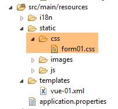
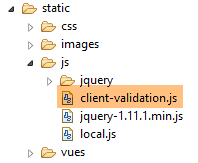
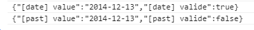
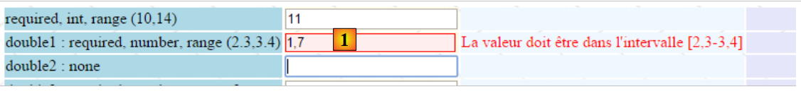
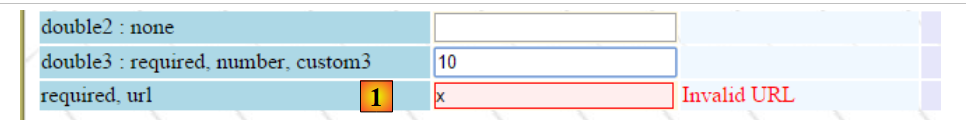

6. Validação JavaScript do lado do cliente
No capítulo anterior, abordámos a validação do lado do servidor. Voltemos à arquitetura de uma aplicação Spring MVC:
 |
BBD
Até agora, as páginas enviadas ao cliente não continham qualquer JavaScript. Vamos agora explorar esta tecnologia, que nos permitirá, numa primeira fase, realizar a validação do lado do cliente. O princípio é o seguinte:
- O JavaScript envia os valores para o servidor web;
- e, assim, antes deste POST, pode verificar a validade dos dados e impedir o POST se os dados forem inválidos;
Vamos utilizar o formulário que validámos no lado do servidor. Vamos agora oferecer a opção de o validar tanto no lado do cliente como no lado do servidor.
Nota: Este é um tema complexo. Os leitores que não estiverem interessados neste assunto podem saltar diretamente para o parágrafo 7.
6.1. Características do projeto
Apresentamos algumas vistas do projeto para mostrar as suas funcionalidades. A página inicial é acedida através do URL [http://localhost:8080/js01.html]
 |
Foram implementadas validações em ambos os lados: cliente e servidor. Uma vez que a solicitação POST só ocorre se os valores tiverem sido considerados válidos no lado do cliente, as validações no lado do servidor são sempre bem-sucedidas. Por isso, disponibilizamos um link para desativar as validações no lado do cliente. Neste modo, o comportamento é o mesmo que já estudámos. Aqui está um exemplo:
123  |
- em [1], os valores introduzidos;
- em [2], as mensagens de erro relacionadas com as entradas;
- em [3], um resumo dos erros, com o seguinte para cada um:
- o nome do campo validado,
- o código de erro,
- a mensagem padrão para esse código de erro;
Agora, vamos ativar a validação do lado do cliente:
 |
- em [1], os valores introduzidos. Note que as entradas incorretas têm um estilo específico;
- em [2], as mensagens de erro associadas às entradas incorretas. São idênticas às geradas pelo servidor;
- em [3-4], não há nada porque, enquanto houver entradas incorretas, o pedido POST ao servidor não é efetuado;
6.2. Validação do lado do servidor
6.2.1. Configuração
Começamos por criar um novo projeto Maven [springmvc-validation-client]:
 |
Desenvolvemos o projeto da seguinte forma:
 |
A classe [Config] configura o projeto. É idêntica à dos projetos anteriores:
package istia.st.springmvc.config;
import java.util.Locale;
import org.springframework.boot.autoconfigure.EnableAutoConfiguration;
import org.springframework.context.MessageSource;
import org.springframework.context.annotation.Bean;
import org.springframework.context.annotation.ComponentScan;
import org.springframework.context.annotation.Configuration;
import org.springframework.context.support.ResourceBundleMessageSource;
import org.springframework.web.servlet.config.annotation.InterceptorRegistry;
import org.springframework.web.servlet.config.annotation.WebMvcConfigurerAdapter;
import org.springframework.web.servlet.i18n.CookieLocaleResolver;
import org.springframework.web.servlet.i18n.LocaleChangeInterceptor;
import org.thymeleaf.spring4.SpringTemplateEngine;
import org.thymeleaf.spring4.templateresolver.SpringResourceTemplateResolver;
@Configuration
@ComponentScan({ "istia.st.springmvc.controllers", "istia.st.springmvc.models" })
@EnableAutoConfiguration
public class Config extends WebMvcConfigurerAdapter {
@Bean
public MessageSource messageSource() {
ResourceBundleMessageSource messageSource = new ResourceBundleMessageSource();
messageSource.setBasename("i18n/messages");
return messageSource;
}
@Bean
public LocaleChangeInterceptor localeChangeInterceptor() {
LocaleChangeInterceptor localeChangeInterceptor = new LocaleChangeInterceptor();
localeChangeInterceptor.setParamName("lang");
return localeChangeInterceptor;
}
@Override
public void addInterceptors(InterceptorRegistry registry) {
registry.addInterceptor(localeChangeInterceptor());
}
@Bean
public CookieLocaleResolver localeResolver() {
CookieLocaleResolver localeResolver = new CookieLocaleResolver();
localeResolver.setCookieName("lang");
localeResolver.setDefaultLocale(new Locale("fr"));
return localeResolver;
}
@Bean
public SpringResourceTemplateResolver templateResolver() {
SpringResourceTemplateResolver templateResolver = new SpringResourceTemplateResolver();
templateResolver.setPrefix("classpath:/templates/");
templateResolver.setSuffix(".xml");
templateResolver.setTemplateMode("HTML5");
templateResolver.setCacheable(true);
templateResolver.setCharacterEncoding("UTF-8");
return templateResolver;
}
@Bean
SpringTemplateEngine templateEngine(SpringResourceTemplateResolver templateResolver) {
SpringTemplateEngine templateEngine = new SpringTemplateEngine();
templateEngine.setTemplateResolver(templateResolver);
return templateEngine;
}
}
A classe [Main] é a classe executável do projeto:
package istia.st.springmvc.main;
import istia.st.springmvc.config.Config;
import java.util.Arrays;
import org.springframework.boot.SpringApplication;
import org.springframework.context.ApplicationContext;
public class Main {
public static void main(String[] args) {
// launch the application
ApplicationContext context = SpringApplication.run(Config.class, args);
// displays the list of beans found by Spring
System.out.println("Liste des beans Spring");
String[] beanNames = context.getBeanDefinitionNames();
Arrays.sort(beanNames);
for (String beanName : beanNames) {
System.out.println(beanName);
}
}
}
- Linha 13: O Spring Boot é iniciado com o ficheiro de configuração [Config];
- linhas 15–20: Neste exemplo, mostramos como exibir a lista de objetos geridos pelo Spring. Isto pode ser útil se alguma vez achar que o Spring não está a gerir um dos seus componentes. É uma forma de verificar isso. É também uma forma de verificar a configuração automática realizada pelo Spring Boot. Na consola, verá uma lista semelhante à seguinte:
Destacámos os objetos definidos na classe [Config].
6.2.2. O modelo de formulário
Vamos continuar a explorar o projeto:
 |
A classe [Form01] é a classe que irá receber os valores enviados. É a seguinte:
package istia.st.springmvc.models;
import java.util.Date;
import javax.validation.constraints.AssertFalse;
import javax.validation.constraints.AssertTrue;
import javax.validation.constraints.DecimalMax;
import javax.validation.constraints.DecimalMin;
import javax.validation.constraints.Future;
import javax.validation.constraints.Max;
import javax.validation.constraints.Min;
import javax.validation.constraints.NotNull;
import javax.validation.constraints.Past;
import javax.validation.constraints.Pattern;
import javax.validation.constraints.Size;
import org.hibernate.validator.constraints.Email;
import org.hibernate.validator.constraints.Length;
import org.hibernate.validator.constraints.NotBlank;
import org.hibernate.validator.constraints.Range;
import org.hibernate.validator.constraints.URL;
import org.springframework.format.annotation.DateTimeFormat;
public class Form01 {
// posted values
@NotNull
@AssertFalse
private Boolean assertFalse;
@NotNull
@AssertTrue
private Boolean assertTrue;
@NotNull
@Future
@DateTimeFormat(pattern = "yyyy-MM-dd")
private Date dateInFuture;
@NotNull
@Past
@DateTimeFormat(pattern = "yyyy-MM-dd")
private Date dateInPast;
@NotNull
@Max(value = 100)
private Integer intMax100;
@NotNull
@Min(value = 10)
private Integer intMin10;
@NotNull
@NotBlank
private String strNotEmpty;
@NotNull
@Size(min = 4, max = 6)
private String strBetween4and6;
@NotNull
@Pattern(regexp = "^\\d{2}:\\d{2}:\\d{2}$")
private String hhmmss;
@NotNull
@Email
@NotBlank
private String email;
@NotNull
@Length(max = 4, min = 4)
private String str4;
@Range(min = 10, max = 14)
@NotNull
private Integer int1014;
@NotNull
@DecimalMax(value = "3.4")
@DecimalMin(value = "2.3")
private Double double1;
@NotNull
private Double double2;
@NotNull
private Double double3;
@URL
@NotBlank
private String url;
// customer validation
private boolean clientValidation = true;
// local
private String lang;
...
}
Vemos validadores que já conhecemos. Também iremos introduzir o conceito de validação personalizada. Trata-se de um tipo de validação que não pode ser tratada por um validador predefinido. Aqui, exigiremos que [double1+double2] esteja no intervalo [10,13].
6.2.3. O controlador
O controlador [JsController] é o seguinte:
 |
package istia.st.springmvc.controllers;
import istia.st.springmvc.models.Form01;
...
@Controller
public class JsController {
@RequestMapping(value = "/js01", method = RequestMethod.GET, produces = "text/html; charset=UTF-8")
public String js01(Form01 formulaire, Locale locale, Model model) {
setModel(formulaire, model, locale, null);
return "vue-01";
}
...
// preparing the view-01 model
private void setModel(Form01 formulaire, Model model, Locale locale, String message) {
...
}
}
- linha 9, a ação [/js01];
- linha 10: um objeto do tipo [Form01] é instanciado e automaticamente colocado no modelo, associado à chave [form01];
- linha 10: a localização e o modelo são injetados nos parâmetros;
- linha 11: com esta informação, o modelo é preparado;
- linha 12: a vista [vue-01.xml] é exibida;
O método [setModel] é o seguinte:
// preparing the view-01 model
private void setModel(Form01 formulaire, Model model, Locale locale, String message) {
// we only manage fr-FR, en-US locales
String language = locale.getLanguage();
String country = null;
if (language.equals("fr")) {
country = "FR";
formulaire.setLang("fr_FR");
}
if (language.equals("en")) {
country = "US";
formulaire.setLang("en_US");
}
model.addAttribute("locale", String.format("%s-%s", language, country));
// any message
if (message != null) {
model.addAttribute("message", message);
}
}
- O objetivo do método [setModel] é adicionar ao modelo:
- informações sobre a localização,
- a mensagem passada como último parâmetro;
- linha 14: colocamos informações sobre a localização (idioma, país) no modelo;
- linhas 16–18: qualquer mensagem passada como parâmetro é inserida na configuração regional;
- linhas 8, 12: as informações de localização também são armazenadas no formulário [Form01]. O JavaScript utilizará estas informações;
Os valores introduzidos no formulário [vue-01.xml] serão enviados para a seguinte ação [/js02]:
@RequestMapping(value = "/js02", method = RequestMethod.POST, produces = "text/html; charset=UTF-8")
public String js02(@Valid Form01 formulaire, BindingResult result, RedirectAttributes redirectAttributes, Locale locale, Model model) {
Form01Validator validator = new Form01Validator(10, 13);
validator.validate(formulaire, result);
...
}
- Linha 2: A anotação [@Valid Form01 form] garante que os valores enviados serão submetidos aos validadores da classe [Form01]. Sabemos que existe uma validação específica [double1+double2] dentro do intervalo [10,13]. Quando chegamos à linha 3, esta validação ainda não foi realizada;
- linha 3: criamos o seguinte objeto [Form01Validator]:
 |
package istia.st.springmvc.validators;
import istia.st.springmvc.models.Form01;
import org.springframework.validation.Errors;
import org.springframework.validation.Validator;
public class Form01Validator implements Validator {
// validation interval
private double min;
private double max;
// manufacturer
public Form01Validator(double min, double max) {
this.min = min;
this.max = max;
}
@Override
public boolean supports(Class<?> classe) {
return Form01.class.equals(classe);
}
@Override
public void validate(Object form, Errors errors) {
// validated object
Form01 form01 = (Form01) form;
// the value of [double1]
Double double1 = form01.getDouble1();
if (double1 == null) {
return;
}
// the value of [double2]
Double double2 = form01.getDouble2();
if (double2 == null) {
return;
}
// [double1+double2]
double somme = double1 + double2;
// validation
if (somme < min || somme > max) {
errors.rejectValue("double2", "form01.double2", new Double[] { min, max }, null);
}
}
}
- linha 8: para implementar uma validação específica, criamos uma classe que implementa a interface [Validator] do Spring. Esta interface tem dois métodos: [supports] na linha 21 e [validate] na linha 26;
- linhas 21–23: o método [supports] recebe um objeto do tipo [Class]. Deve retornar true para indicar que suporta esta classe, false caso contrário;
- linha 22: especificamos que a classe [Form01Validator] valida apenas objetos do tipo [Form01];
- linhas 15–18: Lembre-se de que queremos implementar a restrição [double1+double2] dentro do intervalo [10,13]. Em vez de nos limitarmos a este intervalo, verificaremos a restrição [double1+double2] dentro do intervalo [min, max]. É por isso que temos um construtor com estes dois parâmetros;
- linha 26: o método [validate] é chamado com uma instância do objeto validado — neste caso, uma instância de [Form01] — e com a coleção de erros atualmente conhecidos [Errors errors]. Se a validação realizada pelo método [validate] falhar, deve criar um novo elemento na coleção [Errors errors];
- linha 43: a validação falhou. Adicionamos um elemento à coleção [Errors errors] utilizando o método [Errors.rejectValue], cujos parâmetros são os seguintes:
- parâmetro 1: normalmente o nome do campo com o erro. Aqui testámos os campos [double1, double2]. Podemos usar qualquer um deles,
- a mensagem de erro associada, ou mais precisamente a sua chave nos ficheiros de mensagens externalizados:
[messages_fr.properties]
form01.double2=[double2+double1] doit être dans l''intervalle [{0},{1}]
[messages_en.properties]
form01.double2=[double2+double1] must be in [{0},{1}
Aqui temos mensagens parametrizadas por {0} e {1}. Portanto, devem ser fornecidos dois valores para esta mensagem. É isso que o terceiro parâmetro do método [Errors.rejectValue] faz.
- O quarto parâmetro é uma mensagem padrão para o erro;
Voltemos à ação [/js02]:
@RequestMapping(value = "/js02", method = RequestMethod.POST, produces = "text/html; charset=UTF-8")
public String js02(@Valid Form01 formulaire, BindingResult result, RedirectAttributes redirectAttributes, Locale locale, Model model) {
Form01Validator validator = new Form01Validator(10, 13);
validator.validate(formulaire, result);
if (result.hasErrors()) {
StringBuffer buffer = new StringBuffer();
for (ObjectError error : result.getAllErrors()) {
buffer.append(String.format("[name=%s,code=%s,message=%s]", error.getObjectName(), error.getCode(), error.getDefaultMessage()));
}
setModel(formulaire, model, locale, buffer.toString());
return "vue-01";
} else {
redirectAttributes.addFlashAttribute("form01", formulaire);
return "redirect:/js01.html";
}
}
- linha 4: o validador [Form01Validator] é executado com os seguintes parâmetros:
- parâmetro 1: o objeto que está a ser validado,
- parâmetro 2: a lista de erros para este objeto. Este é o objeto [BindingResult result] passado como parâmetro para a ação. Se a validação falhar, este objeto terá mais um erro;
- linha 5: verificamos se existem erros de validação;
- linhas 7–10: percorremos a lista de erros para armazenar o seguinte para cada um:
- o nome do objeto validado,
- o seu código de erro,
- a sua mensagem de erro padrão;
- linha 10: utilizando esta informação, construímos o modelo de visualização [vue-01.xml]. Desta vez, existe uma mensagem — a versão concatenada e abreviada das várias mensagens de erro;
- linhas 12–15: se todos os valores enviados forem válidos, redirecionamos o cliente para a ação [/js01], definindo os valores enviados como atributos Flash;
6.2.4. A Visualização
A visualização [view-01.xml] é complexa. Apresentaremos apenas uma pequena parte dela:
<!DOCTYPE HTML>
<html xmlns:th="http://www.thymeleaf.org">
<head>
<title>Spring 4 MVC</title>
<meta http-equiv="Content-Type" content="text/html; charset=UTF-8" />
<link rel="stylesheet" href="/css/form01.css" />
<script type="text/javascript" src="/js/jquery/jquery-1.10.2.min.js"></script>
...
</head>
<body>
<!-- title -->
<h3>
<span th:text="#{form01.title}"></span>
<span th:text="${locale}"></span>
</h3>
<!-- menu -->
<p>
...
</p>
<!-- form -->
<form action="/someURL" th:action="@{/js02.html}" method="post" th:object="${form01}" name="form" id="form">
<table>
<thead>
<tr>
<th class="col1" th:text="#{form01.col1}">Contrainte</th>
<th class="col2" th:text="#{form01.col2}">Saisie</th>
<th class="col3" th:text="#{form01.col3}">Validation client</th>
<th class="col4" th:text="#{form01.col4}">Validation serveur</th>
</tr>
</thead>
<tbody>
<!-- required -->
<tr>
<td class="col1">required</td>
<td class="col2">
<input type="text" th:field="*{strNotEmpty}" data-val="true" th:attr="data-val-required=#{NotNull}" />
</td>
<td class="col3">
<span class="field-validation-valid" data-valmsg-for="strNotEmpty" data-valmsg-replace="true"></span>
</td>
<td class="col4">
<span th:if="${#fields.hasErrors('strNotEmpty')}" th:errors="*{strNotEmpty}" class="error">Donnée erronée</span>
</td>
</tr>
...
</tbody>
</table>
<p>
<!-- validation button -->
<input type="submit" th:value="#{form01.valider}" value="Valider" onclick="javascript:postForm01()" />
</p>
</form>
<!-- server-side validator message -->
<br/>
<fieldset class="fieldset">
<legend>
<span th:text="#{server.error.message}"></span>
</legend>
<span th:text="${message}" class="error"></span>
</fieldset>
</body>
</html>
Esta página utiliza várias mensagens encontradas nos ficheiros de mensagens externalizados:
[messages_fr.properties]
form01.title=Formulaire - Validations côté client - locale=
form01.col1=Contrainte
form01.col2=Saisie
form01.col3=Validation client
form01.col4=Validation serveur
form01.valider=Valider
server.error.message=Erreurs détectées par les validateurs côté serveur
[messages_en.properties]
form01.title=Form - Client side validation - locale=
form01.col1=Constraint
form01.col2=Input
form01.col3=Client validation
form01.col4=Server validation
form01.valider=Validate
server.error.message=Errors detected by the validators on the server side
Voltemos ao código da página:
- linha 8: um grande número de importações de bibliotecas JavaScript que podemos ignorar aqui;
- linha 14: exibe a localização definida no modelo pelo servidor;
- linha 59: exibe a mensagem definida no modelo pelo servidor;
O código nas linhas 33–44 é novo. Vamos analisá-lo:
<!-- required -->
<tr>
<td class="col1">required</td>
<td class="col2">
<input type="text" th:field="*{strNotEmpty}" data-val="true" th:attr="data-val-required=#{NotNull}" />
</td>
<td class="col3">
<span class="field-validation-valid" data-valmsg-for="strNotEmpty" data-valmsg-replace="true"></span>
</td>
<td class="col4">
<span th:if="${#fields.hasErrors('strNotEmpty')}" th:errors="*{strNotEmpty}" class="error">Donnée erronée</span>
</td>
</tr>
A abordagem mais simples poderá ser analisar o código HTML gerado por este segmento Thymeleaf:
<!-- required -->
<tr>
<td class="col1">required</td>
<td class="col2">
<input type="text" data-val="true" data-val-required="Le champ est obligatoire" id="strNotEmpty" name="strNotEmpty" value="" />
</td>
<td class="col3">
<span class="field-validation-valid" data-valmsg-for="strNotEmpty" data-valmsg-replace="true"></span>
</td>
<td class="col4">
</td>
</tr>
Iremos utilizar uma biblioteca de validação do lado do cliente chamada [jquery.validate]. Todos os atributos [data-x] destinam-se a esta biblioteca. Quando a validação do lado do cliente estiver desativada, estes atributos não serão utilizados. Por isso, por agora, não há necessidade de os compreender. Podemos simplesmente concentrar-nos na seguinte linha do Thymeleaf:
<input type="text" th:field="*{strNotEmpty}" data-val="true" th:attr="data-val-required=#{NotNull}" />
que gera a seguinte linha HTML:
<input type="text" data-val="true" data-val-required="Le champ est obligatoire" id="strNotEmpty" name="strNotEmpty" value="" />
Como mencionado acima, existe um problema na geração do atributo [data-val-required="Este campo é obrigatório"]. Isto deve-se ao facto de o valor associado ao atributo provir de ficheiros de mensagens externalizados. Por isso, somos obrigados a utilizar uma expressão Thymeleaf para o obter. A expressão é a seguinte: [th:attr="data-val-required=#{NotNull}"]. Esta expressão é avaliada e o seu valor é inserido tal como está na tag HTML gerada. É designada por [th:attr] porque é utilizada para gerar atributos não predefinidos no Thymeleaf. Encontrámos atributos predefinidos [th:text, th:value, th:class, ...], mas não existe um atributo [th:data-val-required].
6.2.5. A folha de estilo
Acima, vemos classes CSS como [class="field-validation-valid"]. Algumas destas classes são utilizadas pela biblioteca de validação JavaScript. Estão definidas no seguinte ficheiro [form01.css]:
 |
@CHARSET "UTF-8";
/*styles perso*/
body {
background-image: url("/images/standard.jpg");
}
.col1 {
background: lightblue;
}
.col2 {
background: Cornsilk;
}
.col3 {
background: AliceBlue;
}
.col4 {
background: Lavender;
}
.error {
color: red;
}
.fieldset{
background: Lavender;
}
/* Styles for validation helpers
-----------------------------------------------------------*/
.field-validation-error {
color: #f00;
}
.field-validation-valid {
display: none;
}
.input-validation-error {
border: 1px solid #f00;
background-color: #fee;
}
.validation-summary-errors {
font-weight: bold;
color: #f00;
}
.validation-summary-valid {
display: none;
}
6.3. Validação do lado do cliente
6.3.1. Noções básicas de jQuery e JavaScript
A validação do lado do cliente é feita utilizando JavaScript. Iremos utilizar a estrutura jQuery, que fornece muitas funções que simplificam o desenvolvimento em JavaScript. Abordaremos os conceitos básicos do jQuery necessários para compreender os scripts deste capítulo e dos seguintes.
Criamos um ficheiro HTML estático [JQuery-01.html] e colocamo-lo numa pasta [static / views]:
 |
Este ficheiro terá o seguinte conteúdo:
<!DOCTYPE html>
<html xmlns="http://www.w3.org/1999/xhtml">
<head>
<meta http-equiv="Content-Type" content="text/html; charset=utf-8" />
<title>JQuery-01</title>
<script type="text/javascript" src="/js/jquery-1.11.1.min.js"></script>
</head>
<body>
<h3>Rudiments de JQuery</h3>
<div id="element1">
Elément 1
</div>
</body>
</html>
- linha 6: importação do jQuery;
- linhas 10–12: um elemento da página com o ID [element1]. Vamos trabalhar com este elemento.
Precisamos de descarregar o ficheiro [jquery-1.11.1.min.js]. Pode encontrar a versão mais recente do jQuery no URL [http://jquery.com/download/]:

Vamos colocar o ficheiro descarregado na pasta [static / js]:
 |
Depois de fazer isso, abra a visualização estática [jQuery-01.html] no Chrome [1-2]:
 |
No Google Chrome, prima [Ctrl-Shift-I] para abrir as ferramentas de programador [3]. O separador [Console] [4] permite-lhe executar código JavaScript. Abaixo, fornecemos comandos JavaScript para digitar e explicamos o que fazem.
JS | result |
|
: devolve a coleção de todos os elementos com o ID [element1], pelo que normalmente é uma coleção de 0 ou 1 elemento, uma vez que não é possível ter dois IDs idênticos numa página HTML. |  |
|
: define o texto [blabla] para todos os elementos da coleção. Isto altera o conteúdo apresentado na página |  |
|
oculta os elementos da coleção. O texto [blabla] deixa de ser exibido. |  |
|
: exibe a coleção novamente. Isto permite-nos ver que o elemento com o ID [element1] tem o atributo CSS style='display: none;', o que faz com que o elemento fique oculto. | |
|
: exibe os elementos da coleção. O texto [blabla] aparece novamente. O atributo CSS style='display: block;' é responsável por esta exibição. |  |
|
: define um atributo em todos os elementos da coleção. O atributo aqui é [style] e o seu valor é [color: red]. O texto [blabla] fica vermelho. |  |
 | |
 |
Note que o URL do navegador não mudou durante todas estas operações. Não houve comunicação com o servidor web. Tudo acontece dentro do navegador. Agora, vamos ver o código-fonte da página:
<!DOCTYPE html>
<html xmlns="http://www.w3.org/1999/xhtml">
<head>
<meta http-equiv="Content-Type" content="text/html; charset=utf-8" />
<title>JQuery-01</title>
<script type="text/javascript" src="/js/jquery-1.11.1.min.js"></script>
</head>
<body>
<h3>Rudiments de JQuery</h3>
<div id="element1">
Elément 1
</div>
</body>
</html>
Este é o texto original. Não reflete as alterações feitas ao elemento nas linhas 10–12. É importante ter isto em conta ao depurar JavaScript. Nesses casos, muitas vezes não é necessário visualizar o código-fonte da página apresentada.
Agora sabemos o suficiente para compreender os scripts JavaScript que se seguem.
6.3.2. Bibliotecas de validação JS
Iremos utilizar bibliotecas do ecossistema jQuery. Vários projetos giram em torno do jQuery, o que, por sua vez, dá origem a bibliotecas. Iremos utilizar a biblioteca de validação [jquery.validate.unobstrusive] criada pela Microsoft e doada à jQuery Foundation. Iremos referir-nos a ela doravante como a biblioteca de validação MS ou, mais simplesmente, a biblioteca MS. Para a obter, é necessário um ambiente Microsoft Visual Studio. Não encontrei nenhuma outra forma de a obter. Pode utilizar uma versão gratuita, como o [Visual Studio Community] [http://www.visualstudio.com/en-us/news/vs2013-community-vs.aspx] (dezembro de 2014). Os leitores que não estiverem interessados em seguir os passos abaixo podem obter esta biblioteca e as que dela dependem a partir dos exemplos fornecidos no site deste documento.
Crie um projeto de consola com o Visual Studio [1-4]:
|


 |
- em [5], o projeto de consola;
- em [6-7]: iremos adicionar pacotes [NuGet] ao projeto. O [NuGet] é uma funcionalidade do Visual Studio que permite descarregar bibliotecas na forma de DLLs, bem como bibliotecas JavaScript.
 |
- Em [9-10], pesquise utilizando a palavra-chave [jQuery];
- Em [11-13], descarregue as bibliotecas JavaScript necessárias para a validação do lado do cliente, pela ordem indicada;
- Em [14], descarregue também a biblioteca [Microsoft jQuery Unobtrusive Ajax], que iremos utilizar em breve;
 |
- Em [15-16], procure pacotes utilizando a palavra-chave [globalize];
- em [17], descarregue a biblioteca [jQuery.Validation.Globalize];
 |
Estes vários downloads instalaram várias bibliotecas JavaScript na pasta [Scripts] do projeto [18]. Nem todas são úteis. Cada ficheiro está disponível em duas versões:
- [js]: a versão legível da biblioteca;
- [min.js]: a versão ilegível, a chamada versão «minificada» da biblioteca. Não é verdadeiramente ilegível — é texto — mas não é compreensível. Esta é a versão a utilizar em produção, porque este ficheiro é mais pequeno do que a versão [js] correspondente e, assim, melhora a velocidade de comunicação cliente/servidor;
As versões [min.map] não são essenciais. Na pasta [cultures], pode manter apenas as culturas geridas pela aplicação.
Usando o Explorador do Windows, copie estes ficheiros para a pasta [static/js/jquery] do projeto [springmvc-validation-client] e mantenha apenas os ficheiros úteis [20]:
 |
Em [21], mantenha apenas duas configurações regionais:
- [fr-FR]: Francês (França);
- [en-US]: Inglês dos EUA;
6.3.3. Importação de bibliotecas JS de validação
Para serem utilizadas, estas bibliotecas devem ser importadas pela vista [vue-01.xml]:
<head>
<title>Spring 4 MVC</title>
<meta http-equiv="Content-Type" content="text/html; charset=UTF-8" />
<link rel="stylesheet" href="/css/form01.css" />
<script type="text/javascript" src="/js/jquery/jquery-2.1.1.min.js"></script>
<script type="text/javascript" src="/js/jquery/jquery.validate.min.js"></script>
<script type="text/javascript" src="/js/jquery/jquery.validate.unobtrusive.min.js"></script>
<script type="text/javascript" src="/js/jquery/globalize/globalize.js"></script>
<script type="text/javascript" src="/js/jquery/globalize/cultures/globalize.culture.fr-FR.js"></script>
<script type="text/javascript" src="/js/jquery/globalize/cultures/globalize.culture.en-US.js"></script>
<script type="text/javascript" src="/js/client-validation.js"></script>
<script type="text/javascript" src="/js/local.js"></script>
<script th:inline="javascript">
/*<![CDATA[*/
var culture = [[${locale}]];
Globalize.culture(culture);
/*]]>*/
</script>
</head>
- linha 11: importação de um ficheiro JavaScript que ainda não abordámos;
- linhas 13–18: um script JavaScript interpretado pelo Thymelaf. Ele lida com a localização do lado do cliente;
6.3.4. Gestão da localização do lado do cliente
A localização do lado do cliente é gerida pelo seguinte script JavaScript:
<script th:inline="javascript">
/*<![CDATA[*/
var culture = [[${locale}]];
Globalize.culture(culture);
/*]]>*/
</script>
- Linhas 3-4: Código JavaScript contendo a expressão Thymeleaf [[${locale}]]. Observe a sintaxe específica desta expressão, uma vez que está escrita em JavaScript. A expressão [[${locale}]] será substituída pelo valor da chave [locale] no modelo de visualização;
O resultado na saída HTML gerada por estas linhas é o seguinte:
<script>
/*<![CDATA[*/
var culture = 'en-US';
Globalize.culture(culture);
/*]]>*/
</script>
As linhas 3-4 definem a cultura do lado do cliente. Apenas suportamos duas: [fr-FR] e [en-US]. É por isso que importámos apenas dois ficheiros de cultura:
<script type="text/javascript" src="/js/jquery/globalize/cultures/globalize.culture.fr-FR.js"></script>
<script type="text/javascript" src="/js/jquery/globalize/cultures/globalize.culture.en-US.js"></script>
A cultura a utilizar no lado do cliente é definida no lado do servidor. Voltemos ao código do lado do servidor:
@RequestMapping(value = "/js01", method = RequestMethod.GET, produces = "text/html; charset=UTF-8")
public String js01(Form01 formulaire, Locale locale, Model model) {
setModel(formulaire, model, locale, null);
return "vue-01";
}
// preparing the view-01 model
private void setModel(Form01 formulaire, Model model, Locale locale, String message) {
// we only manage fr-FR, en-US locales
String language = locale.getLanguage();
String country = null;
if (language.equals("fr")) {
country = "FR";
formulaire.setLang("fr_FR");
}
if (language.equals("en")) {
country = "US";
formulaire.setLang("en_US");
}
model.addAttribute("locale", String.format("%s-%s", language, country));
...
}
- Linha 20: A localização [fr-FR] ou [en-US] é definida no modelo de visualização [vue-01.xml] (linha 4). Note uma potencial fonte de complicações. Enquanto uma localização francesa é indicada como [fr-FR] no lado do cliente, é indicada como [fr_FR] no lado do servidor. É por isso que, nas linhas 14 e 18, é armazenada nesta forma no objeto [Form01] que recebe os valores enviados;
Observe o seguinte ponto importante. O script
<script>
/*<![CDATA[*/
var culture = 'en-US';
Globalize.culture(culture);
/*]]>*/
</script>
altera a cultura do cliente com base na localização enviada pelo servidor. Isto não internacionaliza as mensagens apresentadas na página. Apenas altera a forma como certas informações, que dependem da cultura de um país, são interpretadas. Com a cultura [fr_FR], o número real [12.78] é válido, enquanto é inválido com a cultura [en-US]. Deve, portanto, escrever [12.78]. Da mesma forma, a data [12/01/2014] é válida na cultura [fr-FR], enquanto que na cultura [en-US] deve escrever [01/12/2014]. Os ficheiros na pasta [jquery / globalize] tratam deste tipo de questões:
 |
A internacionalização das mensagens de erro é tratada exclusivamente no lado do servidor. Veremos que a página HTML/JS apresenta mensagens de erro correspondentes à localização gerida pelo servidor: em francês para a localização [fr_FR] e em inglês para a localização [en_US].
6.3.5. Os ficheiros de mensagens
A vista [vue-01.xml] utiliza as seguintes mensagens internacionalizadas:
 |
[messages_fr.properties]
NotNull=Le champ est obligatoire
NotEmpty=La donnée ne peut être vide
NotBlank=La donnée ne peut être vide
typeMismatch=Format invalide
Future.form01.dateInFuture=La date doit être postérieure ou égale à celle d''aujourd'hui
Past.form01.dateInPast=La date doit être antérieure ou égale à celle d''aujourd'hui
Min.form01.intMin10=La valeur doit être supérieure ou égale à 10
Max.form01.intMax100=La valeur doit être inférieure ou égale à 100
Size.form01.strBetween4and6=La chaîne doit avoir entre 4 et 6 caractères
Length.form01.str4=La chaîne doit avoir quatre caractères exactement
Email.form01.email=Adresse mail invalide
URL.form01.url=URL invalide
Range.form01.int1014=La valeur doit être dans l''intervalle [10,14]
AssertTrue=Seule la valeur True est acceptée
AssertFalse=Seule la valeur False est acceptée
Pattern.form01.hhmmss=Tapez l''heure sous la forme hh:mm:ss
form01.hhmmss.pattern=^\\d{2}:\\d{2}:\\d{2}$
DateInvalide.form01=Date invalide
form01.str4.pattern=^.{4,4}$
form01.int1014.max=14
form01.int1014.min=10
form01.strBetween4and6.pattern=^.{4,6}$
form01.intMax100.value=100
form01.intMin10.value=10
form01.double1.min=2.3
form01.double1.max=3.4
Range.form01.double1=La valeur doit être dans l'intervalle [2,3-3,4]
form01.title=Formulaire - Validations côté client - locale=
form01.col1=Contrainte
form01.col2=Saisie
form01.col3=Validation client
form01.col4=Validation serveur
form01.valider=Valider
form01.double2=[double2+double1] doit être dans l''intervalle [{0},{1}]
form01.double3=[double3+double1] doit être dans l''intervalle [{0},{1}]
locale.fr=Français
locale.en=English
client.validation.true=Activer la validation client
client.validation.false=Inhiber la validation client
DecimalMin.form01.double1=Le nombre doit être supérieur ou égal à 2,3
DecimalMax.form01.double1=Le nombre doit être inférieur ou égal à 3,4
server.error.message=Erreurs détectées par les validateurs côté serveur
[messages_en.properties]
NotNull=Field is required
NotEmpty=Field can''t be empty
NotBlank=Field can''t be empty
typeMismatch=Invalid format
Future.form01.dateInFuture=Date must be greater or equal to today''s date
Past.form01.dateInPast=Date must be lower or equal today''s date
Min.form01.intMin10=Value must be higher or equal to 10
Max.form01.intMax100=Value must be lower or equal to 100
Size.form01.strBetween4and6=String must have between 4 and 6 characters
Length.form01.str4=String must be exactly 4 characters long
Email.form01.email=Invalid mail address
URL.form01.url=Invalid URL
Range.form01.int1014=Value must be in [10,14]
AssertTrue=Only value True is allowed
AssertFalse=Only value False is allowed
Pattern.form01.hhmmss=Time must follow the format hh:mm:ss
form01.hhmmss.pattern=^\\d{2}:\\d{2}:\\d{2}$
DateInvalide.form01=Invalid Date
form01.str4.pattern=^.{4,4}$
form01.int1014.max=14
form01.int1014.min=10
form01.strBetween4and6.pattern=^.{4,6}$
form01.intMax100.value=100
form01.intMin10.value=10
form01.double1.min=2.3
form01.double1.max=3.4
Range.form01.double1=Value must be in [2.3,3.4]
form01.title=Form - Client side validation - locale=
form01.col1=Constraint
form01.col2=Input
form01.col3=Client validation
form01.col4=Server validation
form01.valider=Validate
form01.double2=[double2+double1] must be in [{0},{1}]
form01.double3=[double3+double1] must be in [{0},{1}]
locale.fr=Français
locale.en=English
client.validation.true=Activate client validation
client.validation.false=Inhibate client validation
DecimalMin.form01.double1=Value must be greater or equal to 2.3
DecimalMax.form01.double1=Value must be lower or equal to 3.4
server.error.message=Errors detected by the validators on the server side
O ficheiro [messages.properties] é uma cópia do ficheiro de mensagens em inglês. Em última análise, qualquer localização que não seja [fr] utilizará mensagens em inglês. Note-se que o ficheiro [messages_fr.properties] é utilizado para todas as localizações [fr_XX], tais como [fr_CA] ou [fr_FR].
A vista [vue-01.xml] utiliza as chaves destas mensagens. Se desejar saber o valor associado a estas chaves, consulte esta secção para o encontrar.
6.3.6. Alterar a localização
A vista [vue-01.xml] contém quatro links:
<body>
<!-- title -->
<h3>
<span th:text="#{form01.title}"></span>
<span th:text="${locale}"></span>
</h3>
<!-- menu -->
<p>
<a id="locale_fr" href="javascript:setLocale('fr_FR')">
<span th:text="#{locale.fr}"></span>
</a>
<a id="locale_en" href="javascript:setLocale('en_US')">
<span style="margin-left:30px" th:text="#{locale.en}"></span>
</a>
<a id="clientValidationTrue" href="javascript:setClientValidation(true)">
<span style="margin-left:30px" th:text="#{client.validation.true}"></span>
</a>
<a id="clientValidationFalse" href="javascript:setClientValidation(false)">
<span style="margin-left:30px" th:text="#{client.validation.false}"></span>
</a>
</p>
<!-- form -->
<form action="/someURL" th:action="@{/js02.html}" method="post" th:object="${form01}" name="form" id="form">
...
alguns dos quais são apresentados abaixo [1]:
 |
Vamos examinar os dois links que permitem alterar a localização para francês ou inglês:
<a id="locale_fr" href="javascript:setLocale('fr_FR')">
<span th:text="#{locale.fr}"></span>
</a>
<a id="locale_en" href="javascript:setLocale('en_US')">
<span style="margin-left:30px" th:text="#{locale.en}"></span>
</a>
Clicar nestes links aciona a execução de um script JavaScript localizado no ficheiro [local.js] [2]. Em ambos os casos, é chamada uma função JavaScript [setLocale]:
// local
function setLocale(locale) {
// update the locale
lang.val(locale);
// we submit the form - this doesn't trigger the client validators - that's why we haven't inhibited client-side validation
document.form.submit();
}
Para compreender a linha 4, é necessário algum contexto. A vista [vue-01.xml] inclui um campo oculto denominado [lang]:
<input type="hidden" th:field="*{lang}" th:value="*{lang}" value="true" />
o que corresponde a um campo [lang] no [Form01]:
// locale
private String lang;
Os campos ocultos são úteis quando se pretende enriquecer os valores enviados. O JavaScript permite atribuir-lhes um valor, e este valor é enviado como uma entrada normal do utilizador. O código HTML gerado pelo Thymeleaf é o seguinte:
<input type="hidden" value="en_US" id="lang" name="lang" />
O valor do parâmetro [value] é o do campo [Form01.lang] no momento em que o HTML é gerado. O que é importante notar é o identificador JavaScript do nó [id="lang"]. Este identificador é utilizado pela seguinte função []:
// global variables
var lang;
// document ready
$(document).ready(function() {
// global references
lang = $("#lang");
});
// local
function setLocale(locale) {
// update the locale
lang.val(locale);
// the form is submitted - for some reason this does not trigger the client's validators
// that's why we didn't inhibit validation
document.form.submit();
}
- linhas 5-8: a função JavaScript [$(document).ready(f)] é uma função que é executada quando o navegador carrega todo o documento enviado pelo servidor. O seu parâmetro é uma função. Utilizamos a função JavaScript [$(document).ready(f)] para inicializar o ambiente JavaScript do documento carregado;
- linha 7: a expressão [$("#lang")] é uma expressão jQuery. O seu valor é uma referência ao nó DOM com o atributo [id='lang'];
- linha 2: as variáveis declaradas fora de uma função são globais para todas as funções. Aqui, isto significa que a variável [lang] inicializada em [$(document).ready()] também está disponível na função [setLocale] na linha 11;
- linha 13: modifica o atributo [value] do nó identificado por [lang]. Se lang for [xx_XX], então a tag HTML para o nó torna-se:
<input type="hidden" value="xx_XX" id="lang" name="lang" />
O JavaScript permite-lhe modificar os valores dos elementos DOM (Document Object Model).
- Linha 16: [document] refere-se ao DOM. [document.form] refere-se ao primeiro formulário encontrado neste documento. Um documento HTML pode ter várias tags <form> e, portanto, vários formulários. Aqui temos apenas um. [document.form.submit] envia este formulário como se o utilizador tivesse clicado num botão com o atributo [type='submit']. Para que ação são enviados os valores do formulário? Para descobrir, observe a tag [form] em [vue-01.xml]:
<!-- form -->
<form action="/someURL" th:action="@{/js02.html}" method="post" th:object="${form01}" name="form" id="form">
A ação que receberá os valores enviados é aquela designada pelo atributo [th:action]. Esta será, portanto, a ação [/js02.html]. Lembre-se de que, neste nome, o sufixo [.html] será removido e, por fim, a ação [/js02] será executada. O que é importante compreender é que o novo valor [xx_XX] do nó [lang] será enviado no formulário [lang=xx_XX]. No entanto, configurámos a nossa aplicação para interceptar o parâmetro [lang] e interpretá-lo como uma alteração de localidade. Assim, no lado do servidor, a localidade passará a ser [xx_XX]. Vejamos a ação [/js02] que será executada:
@RequestMapping(value = "/js02", method = RequestMethod.POST, produces = "text/html; charset=UTF-8")
public String js02(@Valid Form01 formulaire, BindingResult result, RedirectAttributes redirectAttributes, Locale locale, Model model) {
Form01Validator validator = new Form01Validator(10, 13);
validator.validate(formulaire, result);
if (result.hasErrors()) {
StringBuffer buffer = new StringBuffer();
for (ObjectError error : result.getAllErrors()) {
buffer.append(String.format("[name=%s,code=%s,message=%s]", error.getObjectName(), error.getCode(),
error.getDefaultMessage()));
}
setModel(formulaire, model, locale, buffer.toString());
return "vue-01";
} else {
redirectAttributes.addFlashAttribute("form01", formulaire);
return "redirect:/js01.html";
}
}
// preparing the view-01 model
private void setModel(Form01 formulaire, Model model, Locale locale, String message) {
// we only manage fr-FR, en-US locales
String language = locale.getLanguage();
String country = null;
if (language.equals("fr")) {
country = "FR";
formulaire.setLang("fr_FR");
}
if (language.equals("en")) {
country = "US";
formulaire.setLang("en_US");
}
model.addAttribute("locale", String.format("%s-%s", language, country));
...
}
- linha 2: a ação [/js02] receberá a nova localização [xx_XX] encapsulada no parâmetro [Locale locale]:
- linhas 5-12: se algum dos valores enviados for inválido, a vista [vue-01.xml] será exibida com mensagens de erro utilizando a nova localização [xx_XX]. Além disso, a linha 11 define a variável [locale=xx-XX] no modelo. No lado do cliente, este valor será utilizado para atualizar a localização do lado do cliente. Descrevemos este processo;
- Linhas 14–15: Se todos os valores enviados forem válidos, então ocorre um redirecionamento para a seguinte ação [/js01]:
@RequestMapping(value = "/js01", method = RequestMethod.GET, produces = "text/html; charset=UTF-8")
public String js01(Form01 formulaire, Locale locale, Model model) {
setModel(formulaire, model, locale, null);
return "vue-01";
}
- linha 2: a nova localização [xx_XX] é inserida;
- linha 3: o método [setModel] definirá então a localização do cliente como [xx-XX];
Agora, vamos ver a influência da localização na vista [view-01.xml]. Por enquanto, não mostramos a vista na íntegra, pois ela tem mais de 300 linhas. No entanto, a maioria das linhas consiste numa sequência semelhante à seguinte:
<!-- required -->
<tr>
<td class="col1">required</td>
<td class="col2">
<input type="text" th:field="*{strNotEmpty}" data-val="true" th:attr="data-val-required=#{NotNull}" />
</td>
<td class="col3">
<span class="field-validation-valid" data-valmsg-for="strNotEmpty" data-valmsg-replace="true"></span>
</td>
<td class="col4">
<span th:if="${#fields.hasErrors('strNotEmpty')}" th:errors="*{strNotEmpty}" class="error">Donnée erronée</span>
</td>
</tr>
Este código apresenta o seguinte fragmento [1]:
 |
A mensagem de erro [2] provém do atributo [th:attr="data-val-required=#{NotNull}"] na linha 5. [#{NotNull}] é uma mensagem localizada. Dependendo da localização do lado do servidor, a linha 5 gera a tag:
<input type="text" data-val="true" data-val-required="Field is required" id="strNotEmpty" name="strNotEmpty" />
ou a tag:
<input type="text" data-val="true" data-val-required="Le champ est obligatoire" id="strNotEmpty" name="strNotEmpty" />
Os atributos [data-x] são utilizados pela biblioteca JavaScript de validação.
Por fim, note que ambos os links de mudança de localidade:
- desencadeiam um pedido POST para os valores introduzidos;
- alteram a localização tanto no lado do servidor como no lado do cliente;
- geram uma página HTML que inclui mensagens de erro destinadas à biblioteca de validação JavaScript e garantem que essas mensagens estejam no idioma da localização selecionada;
6.3.7. Envio dos valores introduzidos
Vamos examinar o botão [Validate], que envia os valores introduzidos na vista [vue-01.xml]. O seu código HTML é o seguinte:
<!-- validation button -->
<input type="submit" value="Valider" onclick="javascript:postForm01()" />
Se o JavaScript estiver ativado no navegador, clicar no botão irá acionar a execução do método [postForm01]. Se esta função devolver o valor booleano [False], o envio não será efetuado. Se devolver qualquer outro valor, o envio será efetuado. Esta função encontra-se no ficheiro [local.js]:
 |
É importada pela vista [vue-01.xml] através da linha 6 abaixo:
<head>
<title>Spring 4 MVC</title>
<meta http-equiv="Content-Type" content="text/html; charset=UTF-8" />
<link rel="stylesheet" href="/css/form01.css" />
...
<script type="text/javascript" src="/js/local.js"></script>
</head>
Neste ficheiro, encontramos o seguinte código:
// global variables
var formulaire;
var clientValidation;
var double1;
var double2;
var double3;
...
$(document).ready(function() {
// global references
formulaire = $("#form");
clientValidation = $("#clientValidation");
double1 = $("#double1");
double2 = $("#double2");
double3 = $("#double3");
...
});
....
// post form
function postForm01() {
...
}
- linhas 8–16: a função JavaScript [$(document).ready(f)] é uma função que é executada quando o navegador carrega todo o documento enviado pelo servidor. O seu parâmetro é uma função. Utilizamos a função JavaScript [$(document).ready(f)] para inicializar o ambiente JavaScript do documento carregado;
- Linhas 10–14: Para compreender estas linhas, é necessário analisar tanto o código Thymeleaf como o código HTML gerado;
O código Thymeleaf relevante é o seguinte:
<form action="/someURL" th:action="@{/js02.html}" method="post" th:object="${form01}" name="form" id="form">
...
<input type="text" th:field="*{double1}" th:value="*{double1}" ... />
...
<input type="text" th:field="*{double2}" th:value="*{double2}" />
...
<input type="text" th:field="*{double3}" th:value="*{double3}" ... />
...
<input type="hidden" th:field="*{clientValidation}" th:value="*{clientValidation}" value="true" />
o que gera o seguinte código HTML:
<form action="/js02.html" method="post" name="form" id="form">
...
<input type="text" id="double1" name="double1" .../>
....
<input type="text" value="" id="double2" name="double2" />
...
<input value="" id="double3" name="double3" .../>
...
<input type="hidden" value="false" id="clientValidation" name="clientValidation" />
Cada atributo [th:field='x'] gera dois atributos HTML: [name='x'] e [id='x']. O atributo [name] é o nome dos valores enviados. Assim, a presença dos atributos [name='x'] e [value='y'] para uma tag HTML <input type='text'> colocará a string x=y nos valores enviados name1=val1&name2=val2&... O atributo [id='x'] é utilizado pelo JavaScript. Serve para identificar um elemento do DOM (Document Object Model). O documento HTML carregado é, de facto, transformado numa árvore JavaScript denominada DOM, onde cada nó é identificado pelo seu atributo [id].
Voltemos ao código da função [$(document).ready()]:
// global variables
var formulaire;
var clientValidation;
var double1;
var double2;
var double3;
...
$(document).ready(function() {
// global references
formulaire = $("#form");
clientValidation = $("#clientValidation");
double1 = $("#double1");
double2 = $("#double2");
double3 = $("#double3");
...
});
....
// post form
function postForm01() {
...
}
- linha 10: a expressão [$("#form")] é uma expressão jQuery. O seu valor é uma referência ao nó DOM com o atributo [id='form'];
- linhas 10–14: recuperamos referências a cinco nós DOM;
- linhas 2–6: as variáveis declaradas fora de uma função são globais para as funções. Aqui, isto significa que as variáveis [form, clientValidation, double1, double2, double3] inicializadas em [$(document).ready()] também estarão disponíveis na função [postForm01] na linha 19;
Agora, vamos examinar a função [postForm01]:
// post formulaire
function postForm01() {
// mode de validation côté client
var validationActive = clientValidation.val() === "true";
if (validationActive) {
// on efface les erreurs du serveur
clearServerErrors();
// validation du formulaire
if (!formulaire.validate().form()) {
// pas de submit
return false;
}
}
// réels au format anglo-saxon
var value1 = double1.val().replace(",", ".");
double1.val(value1);
var value2 = double2.val().replace(",", ".");
double2.val(value2);
var value3 = double3.val().replace(",", ".");
double3.val(value3);
// on laisse le submit se faire
return true;
}
Lembre-se de que esta função JavaScript é executada antes do formulário ser enviado. Se ela devolver [false] (linha 11), o formulário não será enviado. Se devolver qualquer outro valor (linha 22), o formulário será enviado.
- O código importante está nas linhas 4–12;
- linha 4: recuperamos o valor do campo oculto [clientValidation]. Este valor é «true» se a validação do lado do cliente tiver de estar ativada, «false» caso contrário;
- linha 6: no caso da validação do lado do cliente, limpamos quaisquer mensagens de erro do servidor que possam estar presentes porque o utilizador acabou de alterar a localização;
- linha 9: lembre-se de que a variável [form] representa o nó da tag HTML <form>, ou seja, o formulário. Este formulário contém validadores JavaScript que ainda não abordámos e que serão discutidos nas secções seguintes. A expressão [form.validate().form()] força a execução de todos os validadores JavaScript presentes no formulário. O seu valor é [true] se todos os valores testados forem válidos, [false] caso contrário;
- linha 11: o valor é definido como [false] se pelo menos um dos valores testados for inválido. Isto impedirá que o formulário seja enviado para o servidor;
- linhas 15–20: os identificadores [double1, double2, double3] representam os três números reais no formulário. Dependendo da localização, o valor introduzido difere. Com a localização [fr-FR], escrevemos [10,37], enquanto que com a localização [en-US], escrevemos [10.37]. Isso cobre a entrada. Com a localização [fr-FR], o valor enviado para [double1] terá o formato [double1=10,37]. Assim que chegar ao servidor, o valor [10,37] será rejeitado porque o servidor espera [10.37], o formato padrão para números reais em Java. Portanto, as linhas 15–20 substituem a vírgula por um ponto no valor introduzido para estes números;
- linha 15: a expressão [double1.val()] devolve a cadeia introduzida para o nó [double1]. A expressão [double1.val().replace(",", ".")] substitui as vírgulas nesta cadeia por pontos. O resultado é uma cadeia [value1];
- linha 16: a instrução [double1.val(value1)] atribui este valor [value1] ao nó [double1].
Tecnicamente, se o utilizador introduziu [10,37] para o número real [double1], após as instruções anteriores o nó [double1] tem o valor [10.37] e o valor que será enviado será [param1=val1&double1=10.37¶m2=val2], um valor que será aceite pelo servidor;
- Linha 22: Definimos o valor como [true] para que o [submit] do formulário seja executado;
Note-se que a função JavaScript [postForm01]:
- executa todos os validadores JavaScript do formulário se a validação do lado do cliente estiver ativada e impede que o formulário seja enviado para o servidor se algum dos valores introduzidos tiver sido declarado inválido;
- permite que o botão [submit] seja clicado, quer porque a validação do lado do cliente não está ativada, quer porque está ativada e todos os valores introduzidos são válidos;
Isso deixa a instrução na linha [3]:
// on efface les erreurs du serveur
clearServerErrors();
O objetivo da função [clearServerErrors] é limpar as mensagens na coluna 4 da vista [vue-01.xml]:
 |
Na captura de ecrã acima, clicámos na ligação [English]. Vimos que isto desencadeou um POST dos valores introduzidos sem ativar os validadores JavaScript. Após o retorno do POST, a coluna [Validação do Servidor] preenche-se com quaisquer mensagens de erro. Se agora clicarmos no botão [Validar] [2] com os validadores JavaScript ativados [3], a coluna [Validação do Cliente] [4] preencher-se-á com mensagens. Se não fizermos nada, as mensagens que estavam presentes na coluna [Validação do servidor] permanecerão, o que causará confusão, uma vez que, no caso de erros detetados pelos validadores JavaScript, o servidor não é chamado. Para evitar isto, limpamos a coluna [Validação do servidor] na função [postForm01]. A função [clearServerErrors()] faz isto:
function clearServerErrors() {
// delete server error msgs
$(".error").each(function(index) {
$(this).text("");
});
}
Uma característica distintiva das mensagens de erro é que todas elas têm a classe [error]. Por exemplo, para a primeira linha da tabela em [vue-01.html]:
<span th:if="${#fields.hasErrors('strNotEmpty')}" th:errors="*{strNotEmpty}" class="error">Donnée erronée</span>
E estes são os únicos nós no DOM com esta classe. Utilizamos esta propriedade na função [clearServerErrors]:
function clearServerErrors() {
// delete server error msgs
$(".error").each(function(index) {
$(this).text("");
});
}
- linha 3: a expressão [$(".error")] devolve a coleção de nós DOM com a classe [error];
- linha 3: a expressão [$(".error").each(function(index){f}] executa a função [f] para cada nó da coleção. Recebe um parâmetro [index] — que não é utilizado aqui — representando o índice do nó na coleção;
- linha 4: a expressão [$(this)] refere-se ao nó atual na iteração. Trata-se de uma tag span HTML. A expressão [$(this).text("")] atribui a string vazia ao texto exibido pela tag span;
Vamos agora examinar vários validadores JavaScript.
6.3.8. Validador [required]
Vamos examinar o primeiro elemento do formulário:
 |
A linha [1] é gerada pela seguinte sequência na visualização [vue-01.xml]:
<!-- required -->
<tr>
<td class="col1">required</td>
<td class="col2">
<input type="text" th:field="*{strNotEmpty}" data-val="true" th:attr="data-val-required=#{NotNull}" />
</td>
<td class="col3">
<span class="field-validation-valid" data-valmsg-for="strNotEmpty" data-valmsg-replace="true"></span>
</td>
<td class="col4">
<span th:if="${#fields.hasErrors('strNotEmpty')}" th:errors="*{strNotEmpty}" class="error">Donnée erronée</span>
</td>
</tr>
Estas linhas referem-se ao campo [strNotEmpty] no formulário [Form01]:
@NotNull
@NotBlank
private String strNotEmpty;
As restrições [1-2] garantem que o campo [strNotEmpty] deve ser uma cadeia de caracteres válida [NotNull], não pode estar vazio e não pode consistir apenas em espaços [NotBlank]. Pretendemos replicar esta restrição no lado do cliente utilizando JavaScript.
Vamos examinar as linhas 5 e 8. A linha 11 não apresenta qualquer problema. Apresenta a mensagem de erro associada ao campo [strNotEmpty]. Comecemos pela linha 5:
<input type="text" th:field="*{strNotEmpty}" data-val="true" th:attr="data-val-required=#{NotNull}" />
A partir deste código, o Thymeleaf irá gerar a seguinte tag:
<input type="text" data-val="true" data-val-required="Field is required" id="strNotEmpty" name="strNotEmpty" value="x" />
- O atributo [data-val='true'] é utilizado pelas bibliotecas de validação do jQuery. A sua presença indica que o valor do nó está sujeito a validação;
- O atributo [data-val-X='msg'] fornece duas informações. [X] é o nome do validador e [msg] é a mensagem de erro associada a um valor inválido do nó ao qual o validador é aplicado. Isto é meramente informativo. Não faz com que a mensagem de erro seja exibida;
- [required] é um validador reconhecido pela biblioteca de validação [jquery.validate.unobstrusive] da Microsoft. Não há necessidade de o definir. Isto não será sempre o caso no futuro;
- Os atributos [data-x] são ignorados pelo HTML5. Só são úteis se houver JavaScript para os utilizar;
Vamos agora examinar a linha 8:
<span class="field-validation-valid" data-valmsg-for="strNotEmpty" data-valmsg-replace="true"></span>
É utilizada para apresentar a mensagem de erro do validador [required]. Se houver um erro, a biblioteca JavaScript de validação substituirá dinamicamente a linha HTML na tabela pelo seguinte código:
<tr>
<td class="col1">required</td>
<td class="col2">
<input type="text" data-val="true" data-val-required="Le champ est obligatoire" id="strNotEmpty" name="strNotEmpty" value="" aria-required="true" aria-invalid="true" aria-describedby="strNotEmpty-error" class="input-validation-error">
</td>
<td class="col3">
<span class="field-validation-error" data-valmsg-for="strNotEmpty" data-valmsg-replace="true">
<span id="strNotEmpty-error" class="">Le champ est obligatoire</span>
</span>
</td>
<td class="col4">
<span class="error"></span>
</td>
</tr>
</tr>
- linha 4: a classe do nó [strNotEmpty] mudou. Passou a ser [input-validation-error], o que faz com que o campo inválido seja colorido de vermelho;
- linha 7: a classe do [span] mudou. Passou a ser [field-validation-error], o que fará com que o texto do [span] seja exibido a vermelho;
- linha 8: o [span], que anteriormente estava vazio, contém agora o texto [Este campo é obrigatório]. Este texto provém do atributo [data-val-required="Este campo é obrigatório"] na linha 4;
- linha 7: para exibir a mensagem de erro para o nó [strNotEmpty] na linha 4, utilize os atributos [data-valmsg-for="strNotEmpty"] e [data-valmsg-replace="true"] na linha 7;
6.3.9. Validator [assertfalse]
 |
A linha [1] é gerada pela seguinte sequência na vista [vue-01.xml]:
<!-- required, assertfalse -->
<tr>
<td class="col1">required, assertfalse</td>
<td class="col2">
<input type="radio" th:field="*{assertFalse}" value="true" data-val="true"
th:attr="data-val-required=#{NotNull},data-val-assertfalse=#{AssertFalse}" />
<label th:for="${#ids.prev('assertFalse')}">true</label>
<input type="radio" th:field="*{assertFalse}" value="false" data-val="true"
th:attr="data-val-required=#{NotNull},data-val-assertfalse=#{AssertFalse}" />
<label th:for="${#ids.prev('assertFalse')}">false</label>
</td>
<td class="col3">
<span class="field-validation-valid" data-valmsg-for="assertFalse" data-valmsg-replace="true"></span>
</td>
<td class="col4">
<span th:if="${#fields.hasErrors('assertFalse')}" th:errors="*{assertFalse}" class="error">Donnée erronée</span>
</td>
</tr>
Estas linhas referem-se ao campo [assertFalse] no formulário [Form01]:
@NotNull
@AssertFalse
private Boolean assertFalse;
Queremos replicar esta restrição no lado do cliente utilizando JavaScript. As linhas 12–17 são agora padrão:
- linhas 12–14: exibem, em caso de erro no campo [assertFalse], a mensagem contida no atributo [data-val-assertfalse] na linha 6 ou a contida no atributo [data-val-required] na mesma linha. Note-se que estas mensagens são localizadas, ou seja, no idioma previamente selecionado pelo utilizador ou em francês, caso não tenha sido feita qualquer escolha;
- Linhas 5–10: exibem os botões de opção com validadores JavaScript que são acionados assim que o utilizador clica num deles.
Ambos os botões são construídos da mesma forma. Vamos examinar o primeiro:
<input type="radio" th:field="*{assertFalse}" value="true" data-val="true" th:attr="data-val-required=#{NotNull},data-val-assertfalse=#{AssertFalse}" />
Depois de processada pelo Thymeleaf, esta linha torna-se o seguinte:
<input type="radio" value="true" data-val="true" data-val-required="Le champ est obligatoire" data-val-assertfalse="Seule la valeur False est acceptée" id="assertFalse1" name="assertFalse" />
Temos validadores [data-val="true"]. São dois. Um validador chamado [required] [data-val-required="Este campo é obrigatório"] e outro chamado [assertfalse] [data-val-assertfalse="Apenas o valor False é aceite"]. Lembre-se de que o valor do atributo [data-val-X] corresponde à mensagem de erro do validador X.
Já vimos o validador [required]. A novidade aqui é que podemos associar vários validadores a um único valor de entrada. Enquanto o validador [required] é reconhecido pela biblioteca de validação da MS (Microsoft), o mesmo não acontece com o validador [assertFalse]. Vamos, portanto, aprender a criar um novo validador. Iremos criar vários deles, e estes serão colocados num ficheiro chamado [client-validation.js]:
 |
Este ficheiro, tal como os outros, é importado pela vista [vue-01.xml] (linha 6 abaixo):
<head>
<title>Spring 4 MVC</title>
<meta http-equiv="Content-Type" content="text/html; charset=UTF-8" />
<link rel="stylesheet" href="/css/form01.css" />
...
<script type="text/javascript" src="/js/client-validation.js"></script>
...
</head>
Adicionar o validador [assertfalse] envolve simplesmente criar as duas seguintes funções JavaScript:
// -------------- assertfalse
$.validator.addMethod("assertfalse", function(value, element, param) {
return value === "false";
});
$.validator.unobtrusive.adapters.add("assertfalse", [], function(options) {
options.rules["assertfalse"] = options.params;
options.messages["assertfalse"] = options.message.replace("''", "'");
});
Para ser totalmente sincero, não sou especialista em JavaScript; é uma linguagem que ainda me parece bastante misteriosa. Os seus fundamentos são simples, mas as bibliotecas construídas com base neles são frequentemente muito complexas. Para escrever o código acima, inspirei-me em código que encontrei online. Foi o link [http://jsfiddle.net/LDDrk/] que me mostrou o caminho a seguir. Se ainda existir, convido os leitores a darem uma vista de olhos, pois é abrangente e inclui um exemplo funcional. Demonstra como criar um novo validador e permitiu-me criar todos os que constam neste capítulo. Voltemos ao código:
- linhas 2–4: definem o novo validador. A função [$.validator.addMethod] recebe o nome do validador como primeiro parâmetro e uma função que define o validador como segundo parâmetro;
- linha 2: a função tem três parâmetros:
- [value]: o valor a ser validado. A função deve devolver [true] se o valor for válido, [false] caso contrário;
- [element]: o elemento HTML ao qual pertence o valor a ser validado,
- [param]: um objeto que contém os valores associados aos parâmetros de um validador. Ainda não introduzimos este conceito. Aqui, o validador [assertFalse] não tem parâmetros. Podemos determinar se o valor [value] é válido sem informação adicional. Seria diferente se precisássemos de verificar se o valor [value] era um número real no intervalo [min, max]. Nesse caso, precisaríamos de saber [min] e [max]. Estes dois valores são chamados de parâmetros do validador;
- linhas 6–9: uma função exigida pela biblioteca de validação MS. A função [$.validator.unobtrusive.adapters.add] espera, como primeiro parâmetro, o nome do validador; como segundo parâmetro, a matriz de parâmetros do validador; e como terceiro parâmetro, uma função;
- o validador [assertFalse] não tem parâmetros. É por isso que o segundo parâmetro é uma matriz vazia;
- a função tem apenas um parâmetro, um objeto [options] que contém informações sobre o elemento a ser validado e para o qual duas novas propriedades, [rules] e [messages], devem ser definidas;
- linha 7: definimos as regras [rules] para o validador [assertFalse]. Estas regras são os parâmetros do validador [assertFalse], os mesmos que os do parâmetro [param] na linha 2. Estes parâmetros encontram-se em [options.params];
- linha 8: define a mensagem de erro para o validador [assertFalse]. Esta encontra-se em [options.message]. Encontramos o seguinte problema com as mensagens de erro. Nos ficheiros de mensagens, encontraremos a seguinte mensagem:
Range.form01.int1014=La valeur doit être dans l''intervalle [10,14]
O apóstrofo duplo é necessário para o Thymeleaf. Este interpreta-o como um apóstrofo simples. Se utilizar um apóstrofo simples, o Thymeleaf não o exibe. Agora, estas mensagens também servirão como mensagens de erro para a biblioteca de validação MS. No entanto, o JavaScript exibirá ambos os apóstrofos. Na linha 8, substituímos, portanto, o apóstrofo duplo na mensagem de erro por um simples.
Para ter uma ideia melhor do que está a acontecer, podemos adicionar algum código de registo do JavaScript:
// logs
var logs = {
assertfalse : true
}
// -------------- assertfalse
$.validator.addMethod("assertfalse", function(value, element, param) {
// logs
if (logs.assertfalse) {
console.log(jSON.stringify({
"[assertfalse] value" : value
}));
console.log("[assertfalse] element");
console.log(element);
console.log(jSON.stringify({
"[assertfalse] param" : param
}));
}
// test validity
return value === "false";
});
$.validator.unobtrusive.adapters.add("assertfalse", [], function(options) {
// logs
if (logs.assertfalse) {
console.log(jSON.stringify({
"[assertfalse] options.params" : options.params
}));
console.log(jSON.stringify({
"[assertfalse] options.message" : options.message
}));
console.log(jSON.stringify({
"[assertfalse] options.messages" : options.messages
}));
}
// code
options.rules["assertfalse"] = options.params;
options.messages["assertfalse"] = options.message.replace("''", "'");
});
Este código utiliza a biblioteca JSON3 [http://bestiejs.github.io/json3/]. Se ativarmos o registo (linha 3), obtemos a seguinte saída na consola:
Ao carregar a página pela primeira vez, aparecem os seguintes registos:
A função jS [$.validator.unobtrusive.adapters.add] foi executada. Aprendemos o seguinte:
- [options.params] é um objeto vazio porque o validador [assertFalse] não tem parâmetros;
- [options.message] é a mensagem de erro que criámos para o validador [assertFalse] no atributo [data-val-assertFalse];
- [options.messages] é um objeto que contém as outras mensagens de erro para o elemento validado. Aqui encontramos a mensagem de erro que colocámos no atributo [data-val-required];
Agora vamos introduzir um valor incorreto no campo [assertFalse] e validar:
Recebemos então os seguintes registos:
 |
Aqui vemos o seguinte:
- o valor a ser testado é [true] (linha 118);
- o elemento HTML que está a ser testado é o botão de opção com o ID [assertFalse1] (linha 122);
- o validador [assertFalse] não tem parâmetros (linha 123);
Aí está. O que podemos concluir de tudo isto?
Para um validador jS X, devemos definir:
- na tag HTML a ser validada, o atributo [data-val-X='msg'], que define tanto o validador XJS como a sua mensagem de erro;
- duas funções JavaScript para colocar no ficheiro [client-validation.js]:
- [$.validator.addMethod("X", function(value, element, param)],
- [$.validator.unobtrusive.adapters.add("X", [param1, param2], function(options)];
Daqui em diante, vamos basear-nos no que foi feito para este primeiro validador e apresentar apenas as novidades.
6.3.10. Validador [asserttrue]
Este validador é, naturalmente, análogo ao validador [assertFalse].
 |
A linha [1] é gerada pela seguinte sequência na vista [vue-01.xml]:
<!-- required, asserttrue -->
<tr>
<td class="col1">asserttrue</td>
<td class="col2">
<select th:field="*{assertTrue}" data-val="true" th:attr="data-val-asserttrue=#{AssertTrue}">
<option value="true">True</option>
<option value="false">False</option>
</select>
</td>
<td class="col3">
<span class="field-validation-valid" data-valmsg-for="assertTrue" data-valmsg-replace="true"></span>
</td>
<td class="col4">
<span th:if="${#fields.hasErrors('assertTrue')}" th:errors="*{assertTrue}" class="error">Donnée erronée</span>
</td>
</tr>
Estas linhas referem-se ao campo [assertTrue] no formulário [Form01]:
@NotNull
@AssertTrue
private Boolean assertTrue;
Não há nada de novo nas linhas 1–16. Elas utilizam um validador [assertTrue] que deve ser definido no ficheiro [client-validation.js]:
// -------------- asserttrue
$.validator.addMethod("asserttrue", function(value, element, param) {
return value === "true";
});
$.validator.unobtrusive.adapters.add("asserttrue", [], function(options) {
options.rules["asserttrue"] = options.params;
options.messages["asserttrue"] = options.message.replace("''", "'");
});
6.3.11. Validadores [date] e [past]
 |
A linha [1] é gerada pela seguinte sequência na visualização [vue-01.xml]:
<!-- required, date, past -->
<tr>
<td class="col1">required, date, past</td>
<td class="col2">
<input type="date" th:field="*{dateInPast}" th:value="*{dateInPast}" data-val="true"
th:attr="data-val-required=#{NotNull},data-val-date=#{DateInvalide.form01},data-val-past=#{Past.form01.dateInPast}" />
</td>
<td class="col3">
<span class="field-validation-valid" data-valmsg-for="dateInPast" data-valmsg-replace="true"></span>
</td>
<td class="col4">
<span th:if="${#fields.hasErrors('dateInPast')}" th:errors="*{dateInPast}" class="error">Donnée erronée</span>
</td>
</tr>
Estas linhas referem-se ao campo [dateInPast] no formulário [Form01]:
@NotNull
@Past
@DateTimeFormat(pattern = "yyyy-MM-dd")
private Date dateInPast;
A linha para os validadores de data é a seguinte:
<input type="date" th:field="*{dateInPast}" th:value="*{dateInPast}" data-val="true" th:attr="data-val-required=#{NotNull},data-val-date=#{DateInvalide.form01},data-val-past=#{Past.form01.dateInPast}" />
Existem três validadores [data-val-X]: required, date e past. Precisamos de definir as funções associadas a estes dois novos validadores em [client-validation.js]:
logs.date = true;
// -------------- date
$.validator.addMethod("date", function(value, element, param) {
// validity
var valide = Globalize.parseDate(value, "yyyy-MM-dd") != null;
// logs
if (logs.date) {
console.log(jSON.stringify({
"[date] value" : value,
"[date] valide" : valide
}));
}
// result
return valide;
});
$.validator.unobtrusive.adapters.add("date", [], function(options) {
options.rules["date"] = options.params;
options.messages["date"] = options.message.replace("''", "'");
});
e
logs.past = true;
// -------------- past
$.validator.addMethod("past", function(value, element, param) {
// validity
var valide = value <= new Date().toISOString().substring(0, 10);
// logs
if (logs.past) {
console.log(jSON.stringify({
"[past] value" : value,
"[past] valide" : valide
}));
}
// result
return valide;
});
$.validator.unobtrusive.adapters.add("past", [], function(options) {
options.rules["past"] = options.params;
options.messages["past"] = options.message.replace("''", "'");
});
Antes de explicar o código, vamos ver os registos ao introduzir uma data posterior à de hoje:
 |
A primeira coisa a notar é que a data a ser validada chega como uma string no formato [aaaa-mm-dd]. Isto explica as seguintes linhas:
var valide = Globalize.parseDate(value, "yyyy-MM-dd") != null;
A biblioteca [globalize.js] disponibiliza a função [Globalize.parseDate] acima referida. O primeiro parâmetro é a data sob a forma de uma cadeia de caracteres e o segundo é o seu formato. O resultado é um ponteiro nulo se a data for inválida ou, caso contrário, a data resultante.
A validade do validador [past] é verificada pelo código seguinte:
var valide = value <= new Date().toISOString().substring(0, 10);
Aqui está a avaliação da expressão [new Date().toISOString().substring(0, 10)] numa consola:
 |
A cadeia [valor] deve vir antes da cadeia [new Date().toISOString().substring(0, 10)] por ordem alfabética para ser válida.
Note que a versão do Chrome utilizada apresenta a data no formato [aaaa-mm-dd]. No caso de um navegador em que tal não aconteça, o utilizador terá de ser explicitamente instruído a utilizar este formato de entrada.
6.3.12. Validador [futuro]
 |
A linha [1] é gerada pela seguinte sequência na vista [vue-01.xml]:
<!-- required, date, future -->
<tr>
<td class="col1">required, date, future</td>
<td class="col2">
<input type="date" th:field="*{dateInFuture}" th:value="*{dateInFuture}" data-val="true" th:attr="data-val-required=#{NotNull},data-val-date=#{DateInvalide.form01},data-val-future=#{Future.form01.dateInFuture}" />
</td>
<td class="col3">
<span class="field-validation-valid" data-valmsg-for="dateInFuture" data-valmsg-replace="true"></span>
</td>
<td class="col4">
<span th:if="${#fields.hasErrors('dateInFuture')}" th:errors="*{dateInFuture}" class="error">Donnée erronée</span>
</td>
</tr>
Estas linhas referem-se ao campo [dateInFuture] no formulário [Form01]:
@NotNull
@Future
@DateTimeFormat(pattern = "yyyy-MM-dd")
private Date dateInFuture;
- na linha 5, surge um novo validador [data-val-future];
Este validador é, naturalmente, muito semelhante ao validador [past]. As duas funções a adicionar ao [client-validation.js] são as seguintes:
// -------------- future
$.validator.addMethod("future", function(value, element, param) {
var now = new Date().toISOString().substring(0, 10);
return value > now;
});
$.validator.unobtrusive.adapters.add("future", [], function(options) {
options.rules["future"] = options.params;
options.messages["future"] = options.message.replace("''", "'");
});
6.3.13. Validadores [int] e [max]
 |
A linha [1] é gerada pela seguinte sequência na vista [vue-01.xml]:
<!-- required, int, max(100) -->
<tr>
<td class="col1">required, int, max(100)</td>
<td class="col2">
<input type="text" th:field="*{intMax100}" th:value="*{intMax100}" data-val="true" th:attr="data-val-required=#{NotNull},data-val-int=#{typeMismatch},data-val-max=#{Max.form01.intMax100},data-val-max-value=#{form01.intMax100.value}" />
</td>
<td class="col3">
<span class="field-validation-valid" data-valmsg-for="intMax100" data-valmsg-replace="true"></span>
</td>
<td class="col4">
<span th:if="${#fields.hasErrors('intMax100')}" th:errors="*{intMax100}" class="error">Donnée erronée</span>
</td>
</tr>
Estas linhas referem-se ao campo [intMax100] no formulário [Form01]:
@NotNull
@Max(value = 100)
private Integer intMax100;
A linha 5 contém dois novos validadores: [int] e [max]. O último tem um parâmetro: o valor máximo. Vamos examinar o código HTML gerado pela linha 5:
<!-- required, int, max(100) -->
<tr>
<td class="col1">required, int, max(100)</td>
<td class="col2">
<input type="text" data-val="true" data-val-int="Format invalide" data-val-max-value="100" data-val-required="Le champ est obligatoire" data-val-max="La valeur doit être inférieure ou égale à 100" value="" id="intMax100" name="intMax100" />
</td>
<td class="col3">
<span class="field-validation-valid" data-valmsg-for="intMax100" data-valmsg-replace="true"></span>
</td>
<td class="col4">
</td>
</tr>
Vamos rever o significado dos vários atributos [data-X]:
- [data-val="true"] indica que os validadores estão associados ao elemento HTML;
- [data-val-required] introduz o validador [required] com a sua mensagem;
- [data-val-int] introduz o validador [int] com a sua mensagem;
- [data-val-max] introduz o validador [max] com a sua mensagem;
- [data-val-max-value="100"] introduz um parâmetro denominado [value] para o validador [max]. [100] é o valor deste parâmetro. Esta é a primeira vez que nos deparamos com o conceito de parâmetros de validador.
O ficheiro [client-validation.js] é melhorado com o seguinte validador [int]:
logs.int = true;
// -------------- int
$.validator.addMethod("int", function(value, element, param) {
// validity
valide = /^\s*[-\+]?\s*\d+\s*$/.test(value);
// logs
if (logs.int) {
console.log(jSON.stringify({
"[int] value" : value,
"[int] valide" : valide,
}));
}
// result
return valide;
});
$.validator.unobtrusive.adapters.add("int", [], function(options) {
options.rules["int"] = options.params;
options.messages["int"] = options.message.replace("''", "'");
});
- Linha 5: É utilizada uma expressão regular para verificar se a cadeia [value] é, de facto, um número inteiro. Este número inteiro pode ser assinado;
Aqui estão alguns exemplos de registos:
O validador [max] é adicionado da seguinte forma em [client-validation.js]
// -------------- max to be used in conjunction with [int] or [number]
logs.max = true;
$.validator.addMethod("max", function(value, element, param) {
// logs
if (logs.max) {
console.log(jSON.stringify({
"[max] value" : value,
"[max] param" : param
}));
}
// validity
var val = Globalize.parseFloat(value);
if (isNaN(val)) {
// logs
if (logs.max) {
console.log(jSON.stringify({
"[max] valide" : true
}));
}
// result
return true;
}
var max = Globalize.parseFloat(param.value);
var valide = val <= max;
// logs
if (logs.max) {
console.log(jSON.stringify({
"[max] valide" : valide
}));
}
// result
return valide;
});
$.validator.unobtrusive.adapters.add("max", [ "value" ], function(options) {
options.rules["max"] = options.params;
options.messages["max"] = options.message.replace("''", "'");
});
Vamos agora abordar o caso do parâmetro [value] do validador [max] introduzido pelo atributo [data-val-max-value="100"].
- na linha 35, o parâmetro [value] é passado como segundo argumento para a função [$.validator.unobtrusive.adapters.add];
- na linha 3, o objeto [param] já não estará vazio, mas conterá {"value":100};
Para compreender o código nas linhas 3–33, é necessário saber que, quando existem vários validadores no mesmo elemento HTML:
- a ordem em que os validadores são executados é desconhecida;
- a execução dos validadores é interrompida assim que um validador declara o elemento inválido. É então a mensagem de erro desse validador que é associada ao elemento inválido;
Vamos examinar o código:
- linha 12: verificamos se temos um número. Se o validador [int] foi executado antes do validador [max], isto é necessariamente verdade, uma vez que um valor inválido interrompe a execução dos validadores;
- linhas 13–22: se não tivermos um número, isso significa que o validador [int] ainda não foi executado. Indicamos então que o valor testado é válido para permitir que o validador [int] faça o seu trabalho e declare o elemento inválido com a sua própria mensagem de erro;
- linhas 23–24: calcula a validade de [value];
Aqui estão alguns registos:
Valor introduzido | registos |
| |
| |
|
6.3.14. [min] validador
 |
A linha [1] é gerada pela seguinte sequência na vista [vue-01.xml]:
<!-- required, int, min(10) -->
<tr>
<td class="col1">required, int, min(10)</td>
<td class="col2">
<input type="text" th:field="*{intMin10}" th:value="*{intMin10}" data-val="true" th:attr="data-val-required=#{NotNull},data-val-int=#{typeMismatch},data-val-min=#{Min.form01.intMin10},data-val-min-value=#{form01.intMin10.value}" />
</td>
<td class="col3">
<span class="field-validation-valid" data-valmsg-for="intMin10" data-valmsg-replace="true"></span>
</td>
<td class="col4">
<span th:if="${#fields.hasErrors('intMin10')}" th:errors="*{intMin10}" class="error">Donnée erronée</span>
</td>
</tr>
Estas linhas referem-se ao campo [intMin10] no formulário [Form01]:
@NotNull
@Min(value = 10)
private Integer intMin10;
A linha 5 introduz um novo validador [min] [data-val-int=#{typeMismatch}] com um parâmetro [value] [data-val-min-value=#{form01.intMin10.value}"]. Isto é semelhante ao validador [max]. Adicione o seguinte código ao [client-validation.js]:
logs.min = true;
//-------------- min to be used in conjunction with [int] or [number]
$.validator.addMethod("min", function(value, element, param) {
// logs
if (logs.min) {
console.log(jSON.stringify({
"[min] value" : value,
"[min] param" : param
}));
}
// validity
var val = Globalize.parseFloat(value);
if (isNaN(val)) {
// logs
if (logs.min) {
console.log(jSON.stringify({
"[min] valide" : true
}));
}
// result
return true;
}
var min = Globalize.parseFloat(param.value);
var valide = val >= min;
// logs
if (logs.min) {
console.log(jSON.stringify({
"[min] valide" : valide
}));
}
// result
return valide;
});
$.validator.unobtrusive.adapters.add("min", [ "value" ], function(options) {
options.rules["min"] = options.params;
options.messages["min"] = options.message.replace("''", "'");
});
Aqui estão alguns registos de execução:
Valor introduzido | registos |
| |
| |
|
6.3.15. [regex] Validador
 |
A linha [1] é gerada pela seguinte sequência na vista [vue-01.xml]:
<!-- required, regex -->
<tr>
<td class="col1">required, regex</td>
<td class="col2">
<input type="text" th:field="*{strBetween4and6}" th:value="*{strBetween4and6}" data-val="true" th:attr="data-val-required=#{NotNull},data-val-regex=#{Size.form01.strBetween4and6}, data-val-regex-pattern=#{form01.strBetween4and6.pattern}" />
</td>
<td class="col3">
<span class="field-validation-valid" data-valmsg-for="strBetween4and6" data-valmsg-replace="true"></span>
</td>
<td class="col4">
<span th:if="${#fields.hasErrors('strBetween4and6')}" th:errors="*{strBetween4and6}" class="error">Donnée erronée</span>
</td>
</tr>
Estas linhas referem-se ao campo [strBetween4and6] no formulário [Form01]:
@NotNull
@Size(min = 4, max = 6)
private String strBetween4and6;
A linha 5 gera o seguinte HTML:
<input type="text" data-val="true" data-val-required="Le champ est obligatoire" data-val-regex="La chaîne doit avoir entre 4 et 6 caractères" data-val-regex-pattern="^.{4,6}$" value="" id="strBetween4and6" name="strBetween4and6" />
Esta tag introduz o validador [regex] [data-val-regex="A cadeia deve ter entre 4 e 6 caracteres"] com o seu parâmetro [pattern] [data-val-regex-pattern="^.{4,6}$"]. O parâmetro [pattern] é a expressão regular contra a qual o valor a validar deve ser verificado. Aqui, a expressão regular verifica se a string contém entre 4 e 6 caracteres de qualquer tipo. O validador [regex] está predefinido na biblioteca de validação da MS. Por isso, não é necessário adicionar nada ao ficheiro [client-validation.js].
6.3.16. Validador [email]
 |
A linha [1] é gerada pela seguinte sequência na vista [vue-01.xml]:
<!-- required, email -->
<tr>
<td class="col1">required, email</td>
<td class="col2">
<input type="text" th:field="*{email}" th:value="*{email}" data-val="true" th:attr="data-val-required=#{NotNull},data-val-email=#{Email.form01.email}" />
</td>
<td class="col3">
<span class="field-validation-valid" data-valmsg-for="email" data-valmsg-replace="true"></span>
</td>
<td class="col4">
<span th:if="${#fields.hasErrors('email')}" th:errors="*{email}" class="error">Donnée erronée</span>
</td>
</tr>
Estas linhas referem-se ao campo [email] no formulário [Form01]:
@NotNull
@Email
@NotBlank
private String email;
A linha 5 gera a seguinte linha HTML:
<input type="text" data-val="true" data-val-required="Le champ est obligatoire" data-val-email="Adresse mail invalide" value="" id="email" name="email" />
Esta tag introduz o validador [email] [data-val-email="Endereço de e-mail inválido"]. O validador [email] está predefinido na biblioteca de validação da MS. Por conseguinte, não é necessário adicionar nada ao ficheiro [client-validation.js].
6.3.17. Validador [range]
 |
A linha [1] é gerada pela seguinte sequência na vista [vue-01.xml]:
<!-- required, int, range (10,14) -->
<tr>
<td class="col1">required, int, range (10,14)</td>
<td class="col2">
<input type="text" th:field="*{int1014}" th:value="*{int1014}" data-val="true" th:attr="data-val-required=#{NotNull},data-val-int=#{typeMismatch}, data-val-range=#{Range.form01.int1014},data-val-range-max=#{form01.int1014.max},data-val-range-min=#{form01.int1014.min}" />
</td>
<td class="col3">
<span class="field-validation-valid" data-valmsg-for="int1014" data-valmsg-replace="true"></span>
</td>
<td class="col4">
<span th:if="${#fields.hasErrors('int1014')}" th:errors="*{int1014}" class="error">Donnée erronée</span>
</td>
</tr>
Estas linhas aplicam-se ao campo [int1014] no formulário [Form01]:
@Range(min = 10, max = 14)
@NotNull
private Integer int1014;
A linha 5 gera a seguinte linha HTML:
<input type="text" data-val="true" data-val-range-max="14" data-val-range="La valeur doit être dans l''intervalle [10,14]" data-val-int="Format invalide" data-val-required="Le champ est obligatoire" data-val-range-min="10" value="" id="int1014" name="int1014" />
Esta tag introduz um novo validador [range] [data-val-range="O valor deve estar dentro do intervalo [10,14]"] que tem dois parâmetros: [min] [data-val-range-min="10"] e [max] [data-val-range-max="14"].
No ficheiro [client-validation.js], definimos o validador [range] da seguinte forma:
// -------------- range to be used in conjunction with [int] or [number]
logs.range=true
$.validator.addMethod("range", function(value, element, param) {
// logs
if (logs.range) {
console.log(jSON.stringify({
"[range] value" : value,
"[range] param" : param
}));
}
// validity
var val = Globalize.parseFloat(value);
if (isNaN(val)) {
// logs
if (logs.min) {
console.log(jSON.stringify({
"[range] valide" : true
}));
}
// completed
return true;
}
var min = Globalize.parseFloat(param.min);
var max = Globalize.parseFloat(param.max);
var valide = val >= min && val <= max;
// logs
if (logs.range) {
console.log(jSON.stringify({
"[range] valide" : valide
}));
}
// completed
return valide;
});
$.validator.unobtrusive.adapters.add("range", [ "min", "max" ], function(options) {
options.rules["range"] = options.params;
options.messages["range"] = options.message.replace("''", "'");
});
É muito semelhante aos validadores [min] e [max] que já discutimos.
Eis alguns exemplos de registos:
Valor introduzido | registos |
| |
| |
|
6.3.18. [número] Validador
 |
A linha [1] é gerada pela seguinte sequência na vista [vue-01.xml]:
<!-- double1 : required, number, range (2.3,3.4) -->
<tr>
<td class="col1">double1 : required, number, range (2.3,3.4)</td>
<td class="col2">
<input type="text" th:field="*{double1}" th:value="*{double1}" data-val="true"
th:attr="data-val-required=#{NotNull},data-val-number=#{typeMismatch},data-val-range=#{Range.form01.double1},data-val-range-max=#{form01.double1.max},data-val-range-min=#{form01.double1.min}" />
</td>
<td class="col3">
<span class="field-validation-valid" data-valmsg-for="double1" data-valmsg-replace="true"></span>
</td>
<td class="col4">
<span th:if="${#fields.hasErrors('double1')}" th:errors="*{double1}" class="error">Donnée erronée</span>
</td>
</tr>
Estas linhas referem-se ao campo [double1] do formulário [Form01]:
@NotNull
@DecimalMax(value = "3.4")
@DecimalMin(value = "2.3")
private Double double1;
A linha 5 gera a seguinte linha HTML:
<input type="text" data-val="true" data-val-number="Format invalide" data-val-range-max="3.4" data-val-range="La valeur doit être dans l'intervalle [2,3-3,4]" data-val-required="Le champ est obligatoire" data-val-range-min="2.3" value="" id="double1" name="double1" />
A tag introduz um novo validador [number] com o atributo [data-val-number="Formato inválido"]. Este validador é definido da seguinte forma no ficheiro [client-validation.js]:
// -------------- number
logs.number = true;
$.validator.addMethod("number", function(value, element, param) {
var valide = !isNaN(Globalize.parseFloat(value));
// logs
if (logs.number) {
console.log(jSON.stringify({
"[number] value" : value,
"[number] valide" : valide
}));
}
// result
return valide;
});
$.validator.unobtrusive.adapters.add("number", [], function(options) {
options.rules["number"] = options.params;
options.messages["number"] = options.message.replace("''", "'");
});
Aqui estão alguns exemplos de registos:
Valor introduzido | registos |
| |
| |
|
Sabemos que os números reais são sensíveis à cultura. Acima, estamos na cultura [fr-FR]. Quando introduzimos [2,5] (notação anglo-saxónica), o número é aceite. Isto deve-se a [Globalize.parseFloat], que aceita ambas as notações:
Vamos mudar para o inglês e introduzir [+2,5] e [+2,5]. Os registos são os seguintes:
Valor de entrada | registos |
| |
|
Existe um problema com [2,5]. Foi declarado como um número real válido, mas deveria ser escrito como [2.5]. Isto deve-se a [Globalize.parseFloat]:
No exemplo acima, [Globalize.parseFloat] ignora a vírgula e trata o número como 25. Na cultura [en-US], um número real pode incluir um ponto decimal e vírgulas, que por vezes são utilizadas para separar os milhares.
Eis como podemos melhorar a situação:
// -------------- number
logs.number = true;
$.validator.addMethod("number", function(value, element, param) {
// we manage [fr-FR] and [en-US] cultures only
var pattern_fr_FR = /^\s*[-+]?[0-9]*\,?[0-9]+\s*$/;
var pattern_en_US = /^\s*[-+]?[0-9]*\.?[0-9]+\s*$/;
var culture = Globalize.culture().name;
// validity test
var valide;
if (culture === "fr-FR") {
valide = pattern_fr_FR.test(value);
} else if (culture === "en-US") {
valide = pattern_en_US.test(value);
} else {
valide = !isNaN(Globalize.parseFloat(value));
}
// logs
if (logs.number) {
console.log(jSON.stringify({
"[number] value" : value,
"[number] culture" : culture,
"[number] valide" : valide
}));
}
// result
return valide;
});
- linha 5: a expressão regular para um número real na localização [fr-FR];
- linha 6: a expressão regular para um número real na localidade [en-US];
- linha 7: o nome da cultura atual. No nosso exemplo, esta será uma das duas culturas acima;
- linhas 9–16: a verificação de validade do valor introduzido;
- linha 15: previmos o caso em que a localização não é nem [fr-FR] nem [en-US];
Os registos mostram agora o seguinte:
Cultura [fr-FR]
Valor introduzido | registos |
| |
| |
| |
|
Cultura [en-US]
Valor introduzido | registos |
| |
| |
|
6.3.19. Validador [custom3]
 |
A linha [1] é gerada pela seguinte sequência na vista [vue-01.xml]:
<!-- double3 : required, number, custom3 -->
<tr>
<td class="col1">double3 : required, number, custom3</td>
<td class="col2">
<input type="text" th:field="*{double3}" th:value="*{double3}" data-val="true" th:attr="data-val-required=#{NotNull},data-val-number=#{typeMismatch},data-val-custom3=${custom3.message},data-val-custom3-field=${custom3.otherFieldName},data-val-custom3-max=${custom3.max},data-val-custom3-min=${custom3.min}" />
</td>
<td class="col3">
<span class="field-validation-valid" data-valmsg-for="double3" data-valmsg-replace="true"></span>
</td>
<td class="col4">
<span th:if="${#fields.hasErrors('double3')}" th:errors="*{double3}" class="error">Donnée erronée</span>
</td>
</tr>
Estas linhas referem-se ao campo [double3] no formulário [Form01]:
@NotNull
private Double double3;
Aqui, queremos examinar um validador que valida não apenas um valor introduzido, mas uma relação entre dois valores introduzidos. Neste caso, queremos que [double1+double3] esteja dentro do intervalo [10,13].
A linha 5 gera a seguinte linha HTML:
<input type="text" data-val="true" data-val-custom3-min="10.0" data-val-number="Invalid format"
data-val-custom3="[double3+double1] must be in [10,13]" data-val-custom3-max="13.0" data-val-custom3-field="double1" data-val-required="Field is required" value="" id="double3" name="double3" />
Esta linha introduz o novo validador [custom3] declarado pelo atributo [data-val-custom3="[double3+double1] deve estar entre [10,13]"]. Este validador tem os seguintes parâmetros:
- [field] declarado pelo atributo [data-val-custom3-field="double1"]. Este parâmetro designa o campo cujo valor é utilizado para calcular a validade de [double3];
- [min] declarado pelo atributo [data-val-custom3-min="10.0"]. Este parâmetro é o mínimo do intervalo [min, max] dentro do qual [double1+double3] deve estar;
- [max] declarado pelo atributo [data-val-custom3-max="13.0"]. Este parâmetro é o máximo do intervalo [min, max] dentro do qual [double1+double3] deve estar;
Este validador é tratado da seguinte forma em [client-validation.js]:
// -------------- custom3 used in conjunction with [number]
logs.custom3 = true;
$.validator.addMethod("custom3", function(value1, element, param) {
// second value
var value2 = $("#" + param.field).val();
// logs
if (logs.custom3) {
console.log(jSON.stringify({
"[custom3] value1" : value1,
"[custom3] param" : param,
"[custom3] value2" : value2
}))
}
// first value
var valeur1 = Globalize.parseFloat(value1);
if (isNaN(valeur1)) {
// let the [number] validator do the work
if (logs.custom3) {
console.log(jSON.stringify({
"[custom3] valide" : true
}))
}
return true;
}
// second value
var valeur2 = Globalize.parseFloat(value2);
if (isNaN(valeur2)) {
// we cannot calculate the validity
if (logs.custom3) {
console.log(jSON.stringify({
"[custom3] valide" : false
}))
}
return false;
}
// validity calculation
var min = Globalize.parseFloat(param.min);
var max = Globalize.parseFloat(param.max);
var somme = valeur1 + valeur2;
var valide = somme >= min && somme <= max;
// logs
if (logs.custom3) {
console.log(jSON.stringify({
"[custom3] valide" : valide
}))
}
// result
return valide;
});
$.validator.unobtrusive.adapters.add("custom3", [ "field", "max", "min" ], function(options) {
options.rules["custom3"] = options.params;
options.messages["custom3"] = options.message.replace("''", "'");
});
Aqui estão alguns exemplos de registos:
Valores introduzidos [double1,double3] | registos |
| |
| |
| |
|
6.3.20. [url] Validador
 |
A linha [1] é gerada pela seguinte sequência na vista [vue-01.xml]:
<!-- required, url -->
<tr>
<td class="col1">required, url</td>
<td class="col2">
<input type="text" th:field="*{url}" th:value="*{url}" data-val="true" th:attr="data-val-required=#{NotNull},data-val-url=#{URL.form01.url}" />
</td>
<td class="col3">
<span class="field-validation-valid" data-valmsg-for="url" data-valmsg-replace="true"></span>
</td>
<td class="col4">
<span th:if="${#fields.hasErrors('url')}" th:errors="*{url}" class="error">Donnée erronée</span>
</td>
</tr>
Estas linhas referem-se ao campo [url] no formulário [Form01]:
@URL
@NotBlank
private String url;
A linha 5 gera a seguinte linha HTML:
<input type="text" data-val="true" data-val-url="Invalid URL" data-val-required="Field is required" value="" id="url" name="url" />
Introduz o validador [url] com o atributo [data-val-url]. Este validador está predefinido na biblioteca de validação jQuery. Não é necessário adicionar nada ao [client-validation.js].
6.3.21. Ativar/Desativar a Validação do Lado do Cliente
Enquanto a validação do lado do cliente estiver ativada, a validação do lado do servidor nunca é executada, pois os valores enviados só chegam ao servidor se tiverem sido validados no lado do cliente. Para ver a validação do lado do servidor em ação, deve desativar a validação do lado do cliente. A vista [vue-01.xml] fornece dois links para gerir esta ativação/desativação:
<a id="clientValidationTrue" href="javascript:setClientValidation(true)">
<span style="margin-left:30px" th:text="#{client.validation.true}"></span>
</a>
<a id="clientValidationFalse" href="javascript:setClientValidation(false)">
<span style="margin-left:30px" th:text="#{client.validation.false}"></span>
</a>
Estes dois links não são visíveis ao mesmo tempo:
 |  |
A tradução em HTML destes links é a seguinte:
<a id="clientValidationTrue" href="javascript:setClientValidation(true)">
<span style="margin-left:30px">Activer la validation client</span>
</a>
<a id="clientValidationFalse" href="javascript:setClientValidation(false)">
<span style="margin-left:30px">Inhiber la validation client</span>
</a>
O script JavaScript [setClientValidation] está definido no ficheiro [local.js] (ver acima). Na função [$(document).ready] deste ficheiro, são utilizados os links de validação:
// document ready
$(document).ready(function() {
// global references
...
activateValidationTrue = $("#clientValidationTrue");
activateValidationFalse = $("#clientValidationFalse");
clientValidation = $("#clientValidation");
...
// validation links
// clientValidation is a hidden field set by the server
var validate = clientValidation.val();
setClientValidation2(validate === "true");
});
- linha 5: uma referência ao link de ativação da validação do lado do cliente;
- linha 6: uma referência ao link de desativação da validação do lado do cliente;
- linha 7: uma referência a um campo de formulário oculto que armazena o último estado de ativação como um valor booleano [true: validação do lado do cliente ativada, false: validação do lado do cliente desativada]. Este campo está localizado na vista [vue-01.xml] da seguinte forma:
<input type="hidden" th:field="*{clientValidation}" th:value="*{clientValidation}" value="true" />
e corresponde ao campo [clientValidation] no formulário [Form01]:
// validation client
private boolean clientValidation = true;
- Linha 11: Recuperar o valor do campo oculto;
- Linha 12: Chamamos a seguinte função [setClientValidation2]:
function setClientValidation2(activate) {
// liens
if (activate) {
// la validation client est active
activateValidationTrue.hide();
activateValidationFalse.show();
// on parse les validateurs du formulaire
$.validator.unobtrusive.parse(formulaire);
} else {
// la validation client est inactive
activateValidationFalse.hide();
activateValidationTrue.show();
// on désactive les validateurs du formulaire
formulaire.data('validator', null);
}
}
- linha 1: o parâmetro [activate] é definido como [true] se a validação do lado do cliente deve ser ativada, false caso contrário;
- linhas 5-6: o link de desativação é exibido, o link de ativação fica oculto;
- linha 8: para que a validação do lado do cliente funcione, o documento deve ser analisado (parsado) para procurar validadores [data-val-X]. O parâmetro da função [$.validator.unobtrusive.parse] é o ID JavaScript do formulário a ser analisado;
- linhas 11-12: o link de ativação é exibido, o link de desativação é ocultado;
- linha 14: os validadores do formulário são desativados. A partir de agora, é como se não houvesse validadores JavaScript no formulário;
Qual é o objetivo desta função [setClientValidation2]? É utilizada para gerir pedidos POST. Uma vez que o campo [clientValidation] é um campo oculto, é enviado e devolvido com o formulário reenviado pelo servidor. Utilizamos então o seu valor para restaurar a validação do lado do cliente para o estado em que se encontrava antes do POST. Isto porque não há nenhum estado JavaScript preservado entre pedidos. O servidor deve, portanto, passar as informações necessárias para inicializar o JavaScript da nova vista para essa vista. Isto é normalmente feito na função [$(document).ready].
Voltemos à função [setClientValidation], que lida com os cliques nos links para ativar/desativar a validação do lado do cliente:
// validation côté client
function setClientValidation(activate) {
// on gère l'activation / désactivation de la validation client
setClientValidation2(activate);
// on mémorise le choix de l'utilisateur dans le champ caché
clientValidation.val(activate ? "true" : "false");
// ajustements supplémentaires
if (activate) {
// la validation client est active
// on efface tous les messages d'erreur du serveur
clearServerErrors();
// on valide le formulaire
formulaire.validate().form();
} else {
// la validation client est inactive
// on efface tous les messages d'erreur du client
clearClientErrors();
}
}
- linha 4: usamos a função [setClientValidation2] que acabámos de ver;
- linha 6: guardamos a seleção do utilizador no campo oculto para a recuperar quando a próxima solicitação POST for devolvida;
- linha 11: se a validação do lado do cliente estiver ativada, limpamos as mensagens de erro da coluna [server] da vista. Descrevemos a função [clearServerErrors] na secção 6.3.7;
- linha 13: os validadores JavaScript são executados para exibir quaisquer mensagens de erro na coluna [client] da vista;
- linha 17: se a validação do lado do cliente estiver desativada, limpamos as mensagens de erro da coluna [client] da vista. Vamos examinar o código HTML de um elemento com erro na consola de programadores do Chrome:
<td class="col2">
<input type="text" data-val="true" data-val-int="Format invalide" data-val-max-value="100" data-val-required="Le champ est obligatoire" data-val-max="La valeur doit être inférieure ou égale à 100" value="" id="intMax100" name="intMax100" aria-required="true" class="input-validation-error" aria-describedby="intMax100-error">
</td>
<td class="col3">
<span class="field-validation-error" data-valmsg-for="intMax100" data-valmsg-replace="true">
<span id="intMax100-error" class="">Le champ est obligatoire</span>
</span>
</td>
- Na linha 2, vemos que, na coluna 2 da tabela, o elemento com erro tem o estilo [class="input-validation-error"] ;
- Na linha 5, vemos que, na coluna 3 da tabela, a mensagem de erro tem o estilo [class="field-validation-error"] ;
Isto aplica-se a todos os elementos inválidos. Utilizamos estas duas informações na seguinte função [clearClientErrors]:
// clear client errors
function clearClientErrors() {
// erase client error messages
$(".field-validation-error").each(function(index) {
$(this).text("");
});
// change the CSS class of erroneous entries
$(".input-validation-error").each(function(index) {
$(this).removeClass("input-validation-error");
});
}
- linhas 4-6: procuramos todos os elementos DOM com a classe [field-validation-error] e limpamos o texto que eles exibem. É assim que as mensagens de erro são limpas;
- linhas 8-10: procuramos todos os elementos DOM com a classe [input-validation-error] e removemos essa classe deles. Isto restaura o estilo original do elemento que tinha sido destacado a vermelho;